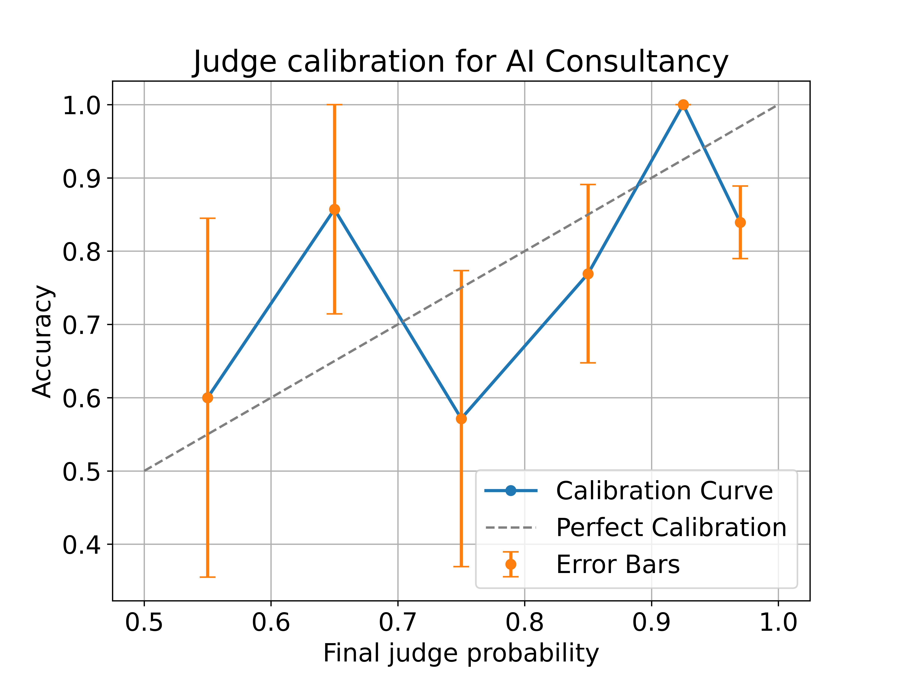

Results
Notes:
- Some of this is already in or was based on the blogpost/interface code. Hit show to see code. I switch between R and Python
- Some of this won’t make it to the paper. You can probably skip preprocessing unless you want to check certain things, example: did we make sure to remove judgments based on X condition. To find bits that I think will be in the paper search [insight]
- If you want to clarify/comment anything do so at https://github.com/sm11197/sm11197.github.io/blob/main/analysis/debate-0923.Rmd) or message me elsewhere
1 Preprocessing
1.1 Importing, then merging, filtering, and adding columns for judgments
We have 3 sets of data:
import pandas as pd
import numpy as np
import matplotlib.pyplot as plt
# Load summaries that can be downloaded from the interface
debates = pd.read_csv("/Users/bila/git/for-debate/debate/save/official/summaries/debates.csv", keep_default_na=True)
sessions = pd.read_csv("/Users/bila/git/for-debate/debate/save/official/summaries/sessions.csv", keep_default_na=True)
turns = pd.read_csv("/Users/bila/git/for-debate/debate/save/official/summaries/turns.csv", keep_default_na=True)
print(f' {debates.shape} - Debates') ;print(f'{sessions.shape} - Sessions, which has multiple rows (of participants) for each debate') ; print(f'{turns.shape} - and Turns, which has multiple rows (of participant turns) for each debate')## (632, 29) - Debates
## (1863, 46) - Sessions, which has multiple rows (of participants) for each debate
## (6220, 16) - and Turns, which has multiple rows (of participant turns) for each debate# Only include debates within a given period
debates["Start time"] = pd.to_datetime(debates["Start time"], unit="ms")
debates["End time"] = pd.to_datetime(debates["End time"], unit="ms")
debates["Last modified time"] = pd.to_datetime(debates["Last modified time"], unit="ms")
debates = debates[
(debates["Start time"] > pd.to_datetime("10/02/23", format="%d/%m/%y")) &
(debates["End time"] < pd.to_datetime("21/05/24", format="%d/%m/%y"))
]
### for filtering to when we had AI debates: 16/07/23
# Filter sessions & turns to only the selected debates
sessions = sessions.merge(debates[["Room name"]], how="inner", on="Room name")
turns = turns.merge(debates[["Room name"]], how="inner", on="Room name")
print(f'We have {len(debates)} debates when filtering out the initial pilots last fall')## We have 583 debates when filtering out the initial pilots last fall#Secondary analysis -- add comment
# Create a new column with the bin labels
debates['Untimed annotator context bins'] = pd.cut(debates['Untimed annotator context'].round(), bins=[0, 1, 2, 3, 4], labels=['1', '2', '3', '4'], right=True)
debates['Speed annotator accuracy bins'] = pd.cut(debates['Speed annotator accuracy'], bins=[-0.999, 0.001, 0.201, 0.401], labels=['0', '0.2', '0.4'])
# 0 right, 1 right, 2 right
debates['Final_Accuracy'] = debates.apply(lambda row: row['Final probability correct'] > 0.5, axis=1)
print(f'Average accuracy per context required by question:\n{debates.groupby("Untimed annotator context bins")["Final_Accuracy"].agg(Proportion_True=lambda x: x.mean(),Total_Count="size")}')## Average accuracy per context required by question:
## Proportion_True Total_Count
## Untimed annotator context bins
## 1 0.781250 64
## 2 0.711382 246
## 3 0.702857 175
## 4 0.632653 98print(f'Average accuracy per difficulty based on speed annotator accuracy:\n{debates.groupby("Speed annotator accuracy bins")["Final_Accuracy"].agg(Proportion_True=lambda x: x.mean(),Total_Count="size")}')## Average accuracy per difficulty based on speed annotator accuracy:
## Proportion_True Total_Count
## Speed annotator accuracy bins
## 0 0.728682 129
## 0.2 0.697509 281
## 0.4 0.694118 170# Determine settings
def setups(row):
if 'GPT-4' in (row['Honest debater'], row['Dishonest debater']):
if row['Is single debater']:
return "AI Consultancy " + ("Honest" if row['Has honest debater'] else "Dishonest")
else:
return "AI Debate"
else:
if row['Is single debater']:
return "Human Consultancy " + ("Honest" if row['Has honest debater'] else "Dishonest")
else:
return "Human Debate"
debates['Setting'] = debates.apply(setups, axis=1)
debates['Final_Setting'] = debates['Setting'].str.replace(' Honest', '').str.replace(' Dishonest', '')
# Merge sessions with debates, so we have each judge's final probability correct and the debate's metadata
source = sessions.merge(
debates[["Room name", "Debater A","Debater B","Honest debater", "Dishonest debater",
"Is single debater", 'Has honest debater',
"Final_Setting", "Setting",
"Question", "Article ID",
"Speed annotator accuracy bins","Untimed annotator context bins",
"Speed annotator accuracy","Untimed annotator context", "Is offline",
'End time', 'Last modified time']],
how="left",
on="Room name",
)
print(f'After merging debates with sessions, we have the following judge participant counts for those debates:\n{source["Role"].value_counts()}') ## After merging debates with sessions, we have the following judge participant counts for those debates:
## Judge 549
## Debater B 487
## Debater A 458
## Offline Judge 223
## Name: Role, dtype: int64#[source['Is over'] == True] to check for completed online/offline debates
# Filter out incomplete judgments
judgments = source[source['Final probability correct'].notnull()]
print(f'After filtering to judges that have finalized their judgment, we have the following judgments per role:\n{judgments["Role"].value_counts()}\nfor a total of {len(judgments)} judgments.')## After filtering to judges that have finalized their judgment, we have the following judgments per role:
## Judge 508
## Offline Judge 214
## Name: Role, dtype: int64
## for a total of 722 judgments.judgments['Final_Accuracy'] = judgments.apply(lambda row: row['Final probability correct'] > 0.5, axis=1)## <string>:1: SettingWithCopyWarning:
## A value is trying to be set on a copy of a slice from a DataFrame.
## Try using .loc[row_indexer,col_indexer] = value instead
##
## See the caveats in the documentation: https://pandas.pydata.org/pandas-docs/stable/user_guide/indexing.html#returning-a-view-versus-a-copyprint(f'Of those judgments, we have this much for each setting (not consolidating honest - dishonest consultancies):\n{judgments["Setting"].value_counts()}')## Of those judgments, we have this much for each setting (not consolidating honest - dishonest consultancies):
## Human Debate 413
## AI Debate 92
## Human Consultancy Dishonest 68
## AI Consultancy Honest 56
## Human Consultancy Honest 53
## AI Consultancy Dishonest 40
## Name: Setting, dtype: int64print(f'Of those judgments, we have this much for each setting (aggregated):\n{judgments["Final_Setting"].value_counts()}')## Of those judgments, we have this much for each setting (aggregated):
## Human Debate 413
## Human Consultancy 121
## AI Consultancy 96
## AI Debate 92
## Name: Final_Setting, dtype: int64# Remove judges who see the story more than once
# Step 1: Extract base story name
judgments['base_room_name'] = judgments['Room name'].str.extract('(.*)\d+$', expand=False).fillna(judgments['Room name'])## <string>:4: SettingWithCopyWarning:
## A value is trying to be set on a copy of a slice from a DataFrame.
## Try using .loc[row_indexer,col_indexer] = value instead
##
## See the caveats in the documentation: https://pandas.pydata.org/pandas-docs/stable/user_guide/indexing.html#returning-a-view-versus-a-copy# Step 2: Filter to keep only the first occurrence
judgments = judgments.sort_values(by='base_room_name').groupby(['Participant', 'base_room_name']).first().reset_index()
print(f'1. We then filter to judgments where the judge has only seen a story once, and now we have this much for each setting (aggregated):\n{judgments["Final_Setting"].value_counts()}')## 1. We then filter to judgments where the judge has only seen a story once, and now we have this much for each setting (aggregated):
## Human Debate 377
## Human Consultancy 121
## AI Consultancy 96
## AI Debate 92
## Name: Final_Setting, dtype: int64judgments = judgments[judgments['Untimed annotator context bins'].isin(['2', '3', '4'])]
print(f'2. We then filter to judgments which require more than a sentence or two, and now we have this much for each setting (aggregated):\n{judgments["Final_Setting"].value_counts()}')## 2. We then filter to judgments which require more than a sentence or two, and now we have this much for each setting (aggregated):
## Human Debate 297
## Human Consultancy 118
## AI Consultancy 95
## AI Debate 88
## Name: Final_Setting, dtype: int64# Filter to online judges only
judgments_online = judgments[judgments["Role"] == "Judge"]
print(f'We\'ll make a copy of the online judgments only leaving us with the following judgments:\n{judgments_online["Setting"].value_counts()}')## We'll make a copy of the online judgments only leaving us with the following judgments:
## Human Debate 153
## AI Debate 87
## Human Consultancy Dishonest 59
## AI Consultancy Honest 55
## Human Consultancy Honest 48
## AI Consultancy Dishonest 38
## Name: Setting, dtype: int641.2 Trying to balance the data
- Balancing honest & dishonest consultancies
- Sampling to 1 debate per question
- Question weights
# QUESTION WEIGHTS
# 1. Calculate the frequency of each question in the dataset
initial_question_frequency = judgments_online.groupby(['Article ID', 'Question','Final_Setting']).size()
# 2. Invert the frequency to get the weight for each question
initial_question_weights = 1 / initial_question_frequency
# 3. Normalize the weights
initial_question_weights = initial_question_weights / initial_question_weights.sum() * len(initial_question_weights)
# 4. Assign the calculated weights to a new column in the judgments_online dataframe
judgments_online['weight_question'] = judgments_online.set_index(['Article ID', 'Question', 'Final_Setting']).index.map(initial_question_weights).values## <string>:2: SettingWithCopyWarning:
## A value is trying to be set on a copy of a slice from a DataFrame.
## Try using .loc[row_indexer,col_indexer] = value instead
##
## See the caveats in the documentation: https://pandas.pydata.org/pandas-docs/stable/user_guide/indexing.html#returning-a-view-versus-a-copyprint('We rebalance the dishonest & honest data, taking the ones on different questions first, then the same questions if needed')## We rebalance the dishonest & honest data, taking the ones on different questions first, then the same questions if neededdef balance_consultancies(df, setting_column, sample_setting):
"""
Strictly match by weights, sample distinct questions, remove them after sampling,
then use common questions if needed to reach min_count, ensuring equal counts.
This version fixes the issue with merging columns.
"""
consult_df = df[df['Setting'].str.contains(sample_setting, na=False)]
honest_df = consult_df[consult_df[setting_column].str.contains('Honest')]
dishonest_df = consult_df[consult_df[setting_column].str.contains('Dishonest')]
min_count = min(len(honest_df), len(dishonest_df))
sample_column_name = f'{sample_setting} Sample'
# Separate into distinct and common questions
# First, let's extract the combinations of 'Article ID' and 'Question' for both honest and dishonest dataframes
honest_combinations = set(honest_df[['Article ID', 'Question']].itertuples(index=False, name=None))
dishonest_combinations = set(dishonest_df[['Article ID', 'Question']].itertuples(index=False, name=None))
# Identifying the common and distinct combinations
common_combinations = honest_combinations.intersection(dishonest_combinations)
distinct_honest_combinations = honest_combinations - common_combinations
distinct_dishonest_combinations = dishonest_combinations - common_combinations
# Filtering the original dataframes based on these combinations to get distinct and common dataframes
common_honest_df = honest_df[honest_df.set_index(['Article ID', 'Question']).index.isin(common_combinations)]
common_dishonest_df = dishonest_df[dishonest_df.set_index(['Article ID', 'Question']).index.isin(common_combinations)]
distinct_honest_df = honest_df[honest_df.set_index(['Article ID', 'Question']).index.isin(distinct_honest_combinations)]
distinct_dishonest_df = dishonest_df[dishonest_df.set_index(['Article ID', 'Question']).index.isin(distinct_dishonest_combinations)]
# Strictly match by weights and sample from distinct questions
for weight in sorted(distinct_honest_df['weight_question'].unique(), reverse=True):
if weight in distinct_dishonest_df['weight_question'].unique():
honest_subset = distinct_honest_df[distinct_honest_df['weight_question'] == weight]
dishonest_subset = distinct_dishonest_df[distinct_dishonest_df['weight_question'] == weight]
sample_size = min(min_count, len(honest_subset), len(dishonest_subset))
honest_sample = honest_subset.sample(sample_size, replace=False)
dishonest_sample = dishonest_subset.sample(sample_size, replace=False)
df.loc[honest_sample.index, sample_column_name] = True
df.loc[dishonest_sample.index, sample_column_name] = True
## Remove sampled rows to prevent them from being selected again
# Find indices that are present in both distinct_honest_df and honest_sample
indices_to_drop_honest = np.intersect1d(distinct_honest_df.index, honest_subset.index)
indices_to_drop_dishonest = np.intersect1d(distinct_dishonest_df.index, dishonest_subset.index)
# Drop those indices from distinct_honest_df and distinct_dishonest_df
distinct_honest_df = distinct_honest_df.drop(indices_to_drop_honest)
distinct_dishonest_df = distinct_dishonest_df.drop(indices_to_drop_dishonest)
# If minimum count isn't reached, sample from the common questions
remaining_needed = (min_count*2) - df[sample_column_name].sum()
for weight in sorted(common_honest_df['weight_question'].unique(), reverse=True):
if remaining_needed <= 0: # Add this condition to prevent negative sample size
break
if weight in common_dishonest_df['weight_question'].unique():
honest_subset = common_honest_df[common_honest_df['weight_question'] == weight]
dishonest_subset = common_dishonest_df[common_dishonest_df['weight_question'] == weight]
sample_size = min(remaining_needed, len(honest_subset), len(dishonest_subset))
honest_sample = honest_subset.sample(sample_size, replace=False)
dishonest_sample = dishonest_subset.sample(sample_size, replace=False)
df.loc[honest_sample.index, sample_column_name] = True
df.loc[dishonest_sample.index, sample_column_name] = True
## Remove sampled rows to prevent them from being selected again
# Find indices that are present in both distinct_honest_df and honest_sample
indices_to_drop_honest = np.intersect1d(common_honest_df.index, honest_sample.index)
indices_to_drop_dishonest = np.intersect1d(common_dishonest_df.index, dishonest_sample.index)
# Drop those indices from distinct_honest_df and distinct_dishonest_df
common_honest_df = common_honest_df.drop(indices_to_drop_honest)
common_dishonest_df = common_dishonest_df.drop(indices_to_drop_dishonest)
remaining_needed = (min_count*2) - df[sample_column_name].sum()
# Concatenate and return the results
return df
# Initially, create the two new columns
judgments_online['AI Consultancy Sample'] = False## <string>:3: SettingWithCopyWarning:
## A value is trying to be set on a copy of a slice from a DataFrame.
## Try using .loc[row_indexer,col_indexer] = value instead
##
## See the caveats in the documentation: https://pandas.pydata.org/pandas-docs/stable/user_guide/indexing.html#returning-a-view-versus-a-copyjudgments_online['Human Consultancy Sample'] = False
judgments_online = balance_consultancies(judgments_online, 'Setting', 'Human Consultancy')## /Users/bila/git/for-debate/debate/.venv/lib/python3.9/site-packages/pandas/core/indexing.py:1763: SettingWithCopyWarning:
## A value is trying to be set on a copy of a slice from a DataFrame.
## Try using .loc[row_indexer,col_indexer] = value instead
##
## See the caveats in the documentation: https://pandas.pydata.org/pandas-docs/stable/user_guide/indexing.html#returning-a-view-versus-a-copy
## isetter(loc, value)
## /Users/bila/git/for-debate/debate/.venv/lib/python3.9/site-packages/pandas/core/indexing.py:1763: SettingWithCopyWarning:
## A value is trying to be set on a copy of a slice from a DataFrame.
## Try using .loc[row_indexer,col_indexer] = value instead
##
## See the caveats in the documentation: https://pandas.pydata.org/pandas-docs/stable/user_guide/indexing.html#returning-a-view-versus-a-copy
## isetter(loc, value)
## /Users/bila/git/for-debate/debate/.venv/lib/python3.9/site-packages/pandas/core/indexing.py:1763: SettingWithCopyWarning:
## A value is trying to be set on a copy of a slice from a DataFrame.
## Try using .loc[row_indexer,col_indexer] = value instead
##
## See the caveats in the documentation: https://pandas.pydata.org/pandas-docs/stable/user_guide/indexing.html#returning-a-view-versus-a-copy
## isetter(loc, value)
## /Users/bila/git/for-debate/debate/.venv/lib/python3.9/site-packages/pandas/core/indexing.py:1763: SettingWithCopyWarning:
## A value is trying to be set on a copy of a slice from a DataFrame.
## Try using .loc[row_indexer,col_indexer] = value instead
##
## See the caveats in the documentation: https://pandas.pydata.org/pandas-docs/stable/user_guide/indexing.html#returning-a-view-versus-a-copy
## isetter(loc, value)
## /Users/bila/git/for-debate/debate/.venv/lib/python3.9/site-packages/pandas/core/indexing.py:1763: SettingWithCopyWarning:
## A value is trying to be set on a copy of a slice from a DataFrame.
## Try using .loc[row_indexer,col_indexer] = value instead
##
## See the caveats in the documentation: https://pandas.pydata.org/pandas-docs/stable/user_guide/indexing.html#returning-a-view-versus-a-copy
## isetter(loc, value)judgments_online = balance_consultancies(judgments_online, 'Setting', 'AI Consultancy')## /Users/bila/git/for-debate/debate/.venv/lib/python3.9/site-packages/pandas/core/indexing.py:1763: SettingWithCopyWarning:
## A value is trying to be set on a copy of a slice from a DataFrame.
## Try using .loc[row_indexer,col_indexer] = value instead
##
## See the caveats in the documentation: https://pandas.pydata.org/pandas-docs/stable/user_guide/indexing.html#returning-a-view-versus-a-copy
## isetter(loc, value)
## /Users/bila/git/for-debate/debate/.venv/lib/python3.9/site-packages/pandas/core/indexing.py:1763: SettingWithCopyWarning:
## A value is trying to be set on a copy of a slice from a DataFrame.
## Try using .loc[row_indexer,col_indexer] = value instead
##
## See the caveats in the documentation: https://pandas.pydata.org/pandas-docs/stable/user_guide/indexing.html#returning-a-view-versus-a-copy
## isetter(loc, value)for col in judgments_online.columns:
if 'Sample' in col:
print(f"Value counts for {col}:")
print(judgments_online[col].value_counts())
print("\n")## Value counts for AI Consultancy Sample:
## False 364
## True 76
## Name: AI Consultancy Sample, dtype: int64
##
##
## Value counts for Human Consultancy Sample:
## False 348
## True 92
## Name: Human Consultancy Sample, dtype: int64print('Now the weights are the same:')## Now the weights are the same:print(judgments_online[judgments_online['Human Consultancy Sample'] == True | judgments_online['Setting'].str.contains('Dishonest')]['weight_question'].sum())## 61.86815920398009print(judgments_online[judgments_online['Human Consultancy Sample'] == True | judgments_online['Setting'].str.contains('Honest')]['weight_question'].sum())## 61.86815920398009print(judgments_online[judgments_online['AI Consultancy Sample'] == True | judgments_online['Setting'].str.contains('Dishonest')]['weight_question'].sum())## 78.33955223880596print(judgments_online[judgments_online['AI Consultancy Sample'] == True | judgments_online['Setting'].str.contains('Honest')]['weight_question'].sum())## 78.33955223880596def create_sample_column(data_frame, setting_column, sample_setting, debate_columns):
# Split the sample setting to get the AI/Human identifier
setting_type, _ = sample_setting.split(' ', 1)
# Get the unique debate combinations within the specified setting
unique_debates = data_frame[data_frame[setting_column] == sample_setting].groupby(debate_columns).apply(lambda x: x.sample(1))
# Define the consultancy conditions
consultancy_conditions = [f'{setting_type} Consultancy Honest', f'{setting_type} Consultancy Dishonest']
# Calculate the count of consultancies based on specified conditions
min_count = min(
len(data_frame[data_frame[setting_column].str.contains(condition)])
for condition in consultancy_conditions) * 2
sample_column_name = f'{sample_setting} Sample'
remaining_needed = (min_count) - data_frame[sample_column_name].sum()
for weight in sorted(unique_debates['weight_question'].unique()):
if remaining_needed <= 0: # Add this condition to prevent negative sample size
break
else:
sample_subset = unique_debates[unique_debates['weight_question'] == weight]
sample_size = min(remaining_needed, len(sample_subset))
sampled_debates = sample_subset.sample(n=sample_size)
data_frame.loc[sampled_debates.index.get_level_values(2), sample_column_name] = True
remaining_needed = (min_count) - data_frame[sample_column_name].sum()
return data_frame
judgments_online['AI Debate Sample'] = False## <string>:2: SettingWithCopyWarning:
## A value is trying to be set on a copy of a slice from a DataFrame.
## Try using .loc[row_indexer,col_indexer] = value instead
##
## See the caveats in the documentation: https://pandas.pydata.org/pandas-docs/stable/user_guide/indexing.html#returning-a-view-versus-a-copyjudgments_online['Human Debate Sample'] = False## <string>:1: SettingWithCopyWarning:
## A value is trying to be set on a copy of a slice from a DataFrame.
## Try using .loc[row_indexer,col_indexer] = value instead
##
## See the caveats in the documentation: https://pandas.pydata.org/pandas-docs/stable/user_guide/indexing.html#returning-a-view-versus-a-copy# Define the columns that define a debate
debate_columns = ['Question', 'Article ID']
# Create samples for Human Debate
judgments_online = create_sample_column(judgments_online, 'Setting', 'Human Debate', debate_columns)## /Users/bila/git/for-debate/debate/.venv/lib/python3.9/site-packages/pandas/core/indexing.py:1763: SettingWithCopyWarning:
## A value is trying to be set on a copy of a slice from a DataFrame.
## Try using .loc[row_indexer,col_indexer] = value instead
##
## See the caveats in the documentation: https://pandas.pydata.org/pandas-docs/stable/user_guide/indexing.html#returning-a-view-versus-a-copy
## isetter(loc, value)
## /Users/bila/git/for-debate/debate/.venv/lib/python3.9/site-packages/pandas/core/indexing.py:1763: SettingWithCopyWarning:
## A value is trying to be set on a copy of a slice from a DataFrame.
## Try using .loc[row_indexer,col_indexer] = value instead
##
## See the caveats in the documentation: https://pandas.pydata.org/pandas-docs/stable/user_guide/indexing.html#returning-a-view-versus-a-copy
## isetter(loc, value)# Create samples for AI Debate (replace 'AIDebate' with the actual setting name)
judgments_online = create_sample_column(judgments_online, 'Setting', 'AI Debate', debate_columns)## /Users/bila/git/for-debate/debate/.venv/lib/python3.9/site-packages/pandas/core/indexing.py:1763: SettingWithCopyWarning:
## A value is trying to be set on a copy of a slice from a DataFrame.
## Try using .loc[row_indexer,col_indexer] = value instead
##
## See the caveats in the documentation: https://pandas.pydata.org/pandas-docs/stable/user_guide/indexing.html#returning-a-view-versus-a-copy
## isetter(loc, value)
## /Users/bila/git/for-debate/debate/.venv/lib/python3.9/site-packages/pandas/core/indexing.py:1763: SettingWithCopyWarning:
## A value is trying to be set on a copy of a slice from a DataFrame.
## Try using .loc[row_indexer,col_indexer] = value instead
##
## See the caveats in the documentation: https://pandas.pydata.org/pandas-docs/stable/user_guide/indexing.html#returning-a-view-versus-a-copy
## isetter(loc, value)# Print value counts for the sample columns
for setting in ['Human Debate', 'AI Debate']:
sample_column_name = f'{setting} Sample'
print(judgments_online[sample_column_name].value_counts())## False 344
## True 96
## Name: Human Debate Sample, dtype: int64
## False 365
## True 75
## Name: AI Debate Sample, dtype: int64# 1. Create the 'Sample' column
sample_columns = [col for col in judgments_online.columns if 'Sample' in col]
consultancy_sample_columns = [col for col in judgments_online.columns if 'Consultancy Sample' in col]
judgments_online['Sample'] = judgments_online[sample_columns].any(axis=1)## <string>:2: SettingWithCopyWarning:
## A value is trying to be set on a copy of a slice from a DataFrame.
## Try using .loc[row_indexer,col_indexer] = value instead
##
## See the caveats in the documentation: https://pandas.pydata.org/pandas-docs/stable/user_guide/indexing.html#returning-a-view-versus-a-copy# Mask for rows where any 'Consultancy Sample' column is True
consultancy_mask = judgments_online[consultancy_sample_columns].any(axis=1)
consultancy_mask.value_counts()## False 272
## True 168
## dtype: int64# Mask for rows where 'Final_Setting' is not consultancy
non_consultancy_mask = ~judgments_online['Final_Setting'].str.contains('Consultancy', case=False, na=False)
non_consultancy_mask.value_counts()## True 240
## False 200
## Name: Final_Setting, dtype: int64# Combine the masks
combined_mask = consultancy_mask | non_consultancy_mask
combined_mask.value_counts()## True 408
## False 32
## dtype: int64# Subset the DataFrame using the combined mask
#judgments_online = judgments_online[combined_mask]
print(f'Finally, the number of counts per question, as shown below:\n{judgments_online[judgments_online["Sample"] == True].groupby(["Article ID", "Question"]).size().value_counts()}\nmeans we still have questions that appear more than once')## Finally, the number of counts per question, as shown below:
## 1 175
## 2 16
## 3 15
## 4 13
## 5 7
## dtype: int64
## means we still have questions that appear more than onceprint(f'PS, this is how it was before all the previous preprocessing:\n{judgments.groupby(["Article ID", "Question"]).size().value_counts()}')## PS, this is how it was before all the previous preprocessing:
## 1 136
## 4 31
## 2 29
## 3 24
## 5 15
## 6 14
## 7 3
## 10 2
## 8 1
## dtype: int64# Filter the dataset to include only sampled rows
sampled_data = judgments_online[judgments_online['Sample']]
# 2. Calculate the frequency of each question in the sampled dataset
question_frequency_sampled = judgments_online.groupby(['Article ID', 'Question','Final_Setting']).size()
# 3. Invert the frequency to get the weight for each question
question_weights_sampled = 1 / question_frequency_sampled
# 4. Normalize the weights
question_weights_sampled = question_weights_sampled / question_weights_sampled.sum() * len(question_weights_sampled)
# Create a mask for rows where Sample is TRUE
mask = judgments_online['Sample'] == True
# Apply the operation only to rows where the mask is true
judgments_online.loc[mask, 'sampled_weight_question'] = (
judgments_online[mask].set_index(['Article ID', 'Question','Final_Setting'])
.index.map(question_weights_sampled)
.fillna(0)
.values
)## /Users/bila/git/for-debate/debate/.venv/lib/python3.9/site-packages/pandas/core/indexing.py:1596: SettingWithCopyWarning:
## A value is trying to be set on a copy of a slice from a DataFrame.
## Try using .loc[row_indexer,col_indexer] = value instead
##
## See the caveats in the documentation: https://pandas.pydata.org/pandas-docs/stable/user_guide/indexing.html#returning-a-view-versus-a-copy
## self.obj[key] = _infer_fill_value(value)
## /Users/bila/git/for-debate/debate/.venv/lib/python3.9/site-packages/pandas/core/indexing.py:1743: SettingWithCopyWarning:
## A value is trying to be set on a copy of a slice from a DataFrame.
## Try using .loc[row_indexer,col_indexer] = value instead
##
## See the caveats in the documentation: https://pandas.pydata.org/pandas-docs/stable/user_guide/indexing.html#returning-a-view-versus-a-copy
## isetter(ilocs[0], value)judgments_online.loc[~mask, 'sampled_weight_question'] = 0## /Users/bila/git/for-debate/debate/.venv/lib/python3.9/site-packages/pandas/core/indexing.py:1763: SettingWithCopyWarning:
## A value is trying to be set on a copy of a slice from a DataFrame.
## Try using .loc[row_indexer,col_indexer] = value instead
##
## See the caveats in the documentation: https://pandas.pydata.org/pandas-docs/stable/user_guide/indexing.html#returning-a-view-versus-a-copy
## isetter(loc, value)# QUESTION WEIGHTS
# 1. Calculate the frequency of each question in the dataset
initial_question_frequency = judgments_online.groupby(['Article ID', 'Question']).size()
# 2. Invert the frequency to get the weight for each question
initial_question_weights = 1 / initial_question_frequency
# 3. Normalize the weights
initial_question_weights = initial_question_weights / initial_question_weights.sum() * len(initial_question_weights)
# 4. Assign the calculated weights to a new column in the judgments_online dataframe
judgments_online['weight_question'] = judgments_online.set_index(['Article ID', 'Question']).index.map(initial_question_weights).values## <string>:2: SettingWithCopyWarning:
## A value is trying to be set on a copy of a slice from a DataFrame.
## Try using .loc[row_indexer,col_indexer] = value instead
##
## See the caveats in the documentation: https://pandas.pydata.org/pandas-docs/stable/user_guide/indexing.html#returning-a-view-versus-a-copyprint('We rebalance the dishonest & honest data, taking the ones on different questions first, then the same questions if needed')## We rebalance the dishonest & honest data, taking the ones on different questions first, then the same questions if neededjudgments_online_final = judgments_online
print(judgments_online_final['Setting'].value_counts())## Human Debate 153
## AI Debate 87
## Human Consultancy Dishonest 59
## AI Consultancy Honest 55
## Human Consultancy Honest 48
## AI Consultancy Dishonest 38
## Name: Setting, dtype: int64for setting in judgments_online_final['Final_Setting'].unique():
total_weight = judgments_online_final[judgments_online_final['Final_Setting'].str.contains(setting)]['weight_question'].sum()
print(f"Total weight for '{setting}': {total_weight}")## Total weight for 'AI Consultancy': 91.90826509096257
## Total weight for 'Human Debate': 98.62685725494042
## Total weight for 'AI Debate': 84.17318442602851
## Total weight for 'Human Consultancy': 44.52402785269456for setting in judgments_online_final['Final_Setting'].unique():
total_weight = judgments_online_final[judgments_online_final['Final_Setting'].str.contains(setting) & judgments_online_final['Sample']]['sampled_weight_question'].sum()
print(f"Total weight for '{setting}': {total_weight}")## Total weight for 'AI Consultancy': 78.33955223880596
## Total weight for 'Human Debate': 86.77611940298505
## Total weight for 'AI Debate': 83.16044776119402
## Total weight for 'Human Consultancy': 61.86815920398009So the weights of honest and honest are now equal, and we account for the different question counts. But we don’t balance for different 4 final setting counts?
#write.csv(py$judgments_online, '/Users/bila/scratch/r-scripts/debate/judgments_online.csv')
judgments_online <- py$judgments_online_final
judgments <- py$judgments
# Convert the Accuracy column to a factor for better plotting
judgments_online$Final_Accuracy_char <- as.logical.factor(as.character(judgments_online$Final_Accuracy))
judgments_online$Participant <- as.factor(judgments_online$Participant)
judgments_online$Setting <- as.factor(judgments_online$Setting)2 Results
2.1 Accuracy
2.1.1 Difference in proportions
acc_diff_test <- function(design, Setting){
print(design)
freq_table <- svytable(~Final_Setting+Final_Accuracy, design)
chisq_result <- svychisq(~Final_Setting+Final_Accuracy, design, statistic = "Chisq")
print(chisq_result)
pairwise_result <- pairwise.prop.test(chisq_result$observed, p.adjust.method="bonferroni", alternative="two.sided")
print(pairwise_result)
}
print("Raw")## [1] "Raw"acc_diff_test(svydesign(ids = ~1, data = judgments))## Warning in svydesign.default(ids = ~1, data = judgments): No weights or
## probabilities supplied, assuming equal probability## Independent Sampling design (with replacement)
## svydesign(ids = ~1, data = judgments)
##
## Pearson's X^2: Rao & Scott adjustment
##
## data: svychisq(~Final_Setting + Final_Accuracy, design, statistic = "Chisq")
## X-squared = 10.672, df = 3, p-value = 0.01375
##
##
## Pairwise comparisons using Pairwise comparison of proportions
##
## data: chisq_result$observed
##
## AI Consultancy AI Debate Human Consultancy
## AI Debate 1.000 - -
## Human Consultancy 0.793 1.000 -
## Human Debate 1.000 0.795 0.013
##
## P value adjustment method: bonferroniprint("Sample")## [1] "Sample"acc_diff_test(svydesign(ids = ~1, data = subset(judgments_online, judgments_online['Sample']==TRUE)))## Warning in svydesign.default(ids = ~1, data = subset(judgments_online,
## judgments_online["Sample"] == : No weights or probabilities supplied, assuming
## equal probability## Independent Sampling design (with replacement)
## print(design)
##
## Pearson's X^2: Rao & Scott adjustment
##
## data: svychisq(~Final_Setting + Final_Accuracy, design, statistic = "Chisq")
## X-squared = 9.5939, df = 3, p-value = 0.02264
##
##
## Pairwise comparisons using Pairwise comparison of proportions
##
## data: chisq_result$observed
##
## AI Consultancy AI Debate Human Consultancy
## AI Debate 1.000 - -
## Human Consultancy 0.865 1.000 -
## Human Debate 1.000 1.000 0.025
##
## P value adjustment method: bonferroniprint("Sample, weighted")## [1] "Sample, weighted"acc_diff_test(svydesign(ids = ~1, data = subset(judgments_online, judgments_online['Sample']==TRUE), weights = ~weight_question))## Independent Sampling design (with replacement)
## print(design)
##
## Pearson's X^2: Rao & Scott adjustment
##
## data: svychisq(~Final_Setting + Final_Accuracy, design, statistic = "Chisq")
## X-squared = 11.463, df = 3, p-value = 0.0225
##
##
## Pairwise comparisons using Pairwise comparison of proportions
##
## data: chisq_result$observed
##
## AI Consultancy AI Debate Human Consultancy
## AI Debate 1.0000 - -
## Human Consultancy 1.0000 1.0000 -
## Human Debate 0.2623 0.1655 0.0083
##
## P value adjustment method: bonferroni2.1.2 Logistic regression
#judgments_online$Final_Setting <- relevel(judgments_online$Final_Setting, ref = "Human Debate")
model1 <- glm(Final_Accuracy ~ relevel(factor(Final_Setting), 'Human Debate'), family = 'binomial', data = judgments_online)
summary(model1)##
## Call:
## glm(formula = Final_Accuracy ~ relevel(factor(Final_Setting),
## "Human Debate"), family = "binomial", data = judgments_online)
##
## Deviance Residuals:
## Min 1Q Median 3Q Max
## -1.9035 0.5973 0.5973 0.7020 0.8430
##
## Coefficients:
## Estimate
## (Intercept) 1.6332
## relevel(factor(Final_Setting), "Human Debate")AI Consultancy -0.2060
## relevel(factor(Final_Setting), "Human Debate")AI Debate -0.3581
## relevel(factor(Final_Setting), "Human Debate")Human Consultancy -0.7814
## Std. Error
## (Intercept) 0.2187
## relevel(factor(Final_Setting), "Human Debate")AI Consultancy 0.3416
## relevel(factor(Final_Setting), "Human Debate")AI Debate 0.3393
## relevel(factor(Final_Setting), "Human Debate")Human Consultancy 0.3040
## z value
## (Intercept) 7.469
## relevel(factor(Final_Setting), "Human Debate")AI Consultancy -0.603
## relevel(factor(Final_Setting), "Human Debate")AI Debate -1.055
## relevel(factor(Final_Setting), "Human Debate")Human Consultancy -2.571
## Pr(>|z|)
## (Intercept) 0.0000000000000809
## relevel(factor(Final_Setting), "Human Debate")AI Consultancy 0.5464
## relevel(factor(Final_Setting), "Human Debate")AI Debate 0.2913
## relevel(factor(Final_Setting), "Human Debate")Human Consultancy 0.0101
##
## (Intercept) ***
## relevel(factor(Final_Setting), "Human Debate")AI Consultancy
## relevel(factor(Final_Setting), "Human Debate")AI Debate
## relevel(factor(Final_Setting), "Human Debate")Human Consultancy *
## ---
## Signif. codes: 0 '***' 0.001 '**' 0.01 '*' 0.05 '.' 0.1 ' ' 1
##
## (Dispersion parameter for binomial family taken to be 1)
##
## Null deviance: 456.49 on 439 degrees of freedom
## Residual deviance: 449.52 on 436 degrees of freedom
## AIC: 457.52
##
## Number of Fisher Scoring iterations: 4table(model1$fitted.values > 0.5) ##
## TRUE
## 440table(judgments_online$Final_Accuracy)##
## FALSE TRUE
## 94 346model2 <- glm(Final_Accuracy ~ Participant + relevel(factor(Final_Setting), 'Human Debate'), family = 'binomial', data = judgments_online)
summary(model2)##
## Call:
## glm(formula = Final_Accuracy ~ Participant + relevel(factor(Final_Setting),
## "Human Debate"), family = "binomial", data = judgments_online)
##
## Deviance Residuals:
## Min 1Q Median 3Q Max
## -2.2337 0.4503 0.5634 0.7272 1.0921
##
## Coefficients:
## Estimate
## (Intercept) 1.43912
## ParticipantAliyaah Toussaint 0.79836
## ParticipantAnuj Jain 0.02085
## ParticipantDavid Rein 0.33745
## ParticipantEmmanuel Makinde -17.00518
## ParticipantEthan Rosen 0.50679
## ParticipantJackson Petty 0.23308
## ParticipantJessica Li 0.59975
## ParticipantJulian Michael 0.61240
## ParticipantJulien Dirani -0.74597
## ParticipantMax Layden 14.12695
## ParticipantNoor Mirza-Rashid -0.52282
## ParticipantReeya Kansra -0.16999
## ParticipantSalsabila Mahdi 0.57579
## ParticipantSam Jin 0.79126
## ParticipantSean Wang 0.96955
## ParticipantShlomo Kofman -0.33232
## ParticipantShreeram Modi -0.44850
## ParticipantVishakh Padmakumar 0.50679
## relevel(factor(Final_Setting), "Human Debate")AI Consultancy -0.32980
## relevel(factor(Final_Setting), "Human Debate")AI Debate -0.47707
## relevel(factor(Final_Setting), "Human Debate")Human Consultancy -0.78660
## Std. Error
## (Intercept) 0.54504
## ParticipantAliyaah Toussaint 0.63692
## ParticipantAnuj Jain 0.59610
## ParticipantDavid Rein 0.81167
## ParticipantEmmanuel Makinde 1455.39763
## ParticipantEthan Rosen 1.19997
## ParticipantJackson Petty 0.69523
## ParticipantJessica Li 0.68504
## ParticipantJulian Michael 0.79952
## ParticipantJulien Dirani 1.34055
## ParticipantMax Layden 1029.12161
## ParticipantNoor Mirza-Rashid 0.99853
## ParticipantReeya Kansra 0.63948
## ParticipantSalsabila Mahdi 0.92938
## ParticipantSam Jin 0.61992
## ParticipantSean Wang 0.71971
## ParticipantShlomo Kofman 0.57016
## ParticipantShreeram Modi 0.68386
## ParticipantVishakh Padmakumar 1.19997
## relevel(factor(Final_Setting), "Human Debate")AI Consultancy 0.39619
## relevel(factor(Final_Setting), "Human Debate")AI Debate 0.39609
## relevel(factor(Final_Setting), "Human Debate")Human Consultancy 0.36874
## z value
## (Intercept) 2.640
## ParticipantAliyaah Toussaint 1.253
## ParticipantAnuj Jain 0.035
## ParticipantDavid Rein 0.416
## ParticipantEmmanuel Makinde -0.012
## ParticipantEthan Rosen 0.422
## ParticipantJackson Petty 0.335
## ParticipantJessica Li 0.875
## ParticipantJulian Michael 0.766
## ParticipantJulien Dirani -0.556
## ParticipantMax Layden 0.014
## ParticipantNoor Mirza-Rashid -0.524
## ParticipantReeya Kansra -0.266
## ParticipantSalsabila Mahdi 0.620
## ParticipantSam Jin 1.276
## ParticipantSean Wang 1.347
## ParticipantShlomo Kofman -0.583
## ParticipantShreeram Modi -0.656
## ParticipantVishakh Padmakumar 0.422
## relevel(factor(Final_Setting), "Human Debate")AI Consultancy -0.832
## relevel(factor(Final_Setting), "Human Debate")AI Debate -1.204
## relevel(factor(Final_Setting), "Human Debate")Human Consultancy -2.133
## Pr(>|z|)
## (Intercept) 0.00828 **
## ParticipantAliyaah Toussaint 0.21004
## ParticipantAnuj Jain 0.97210
## ParticipantDavid Rein 0.67759
## ParticipantEmmanuel Makinde 0.99068
## ParticipantEthan Rosen 0.67278
## ParticipantJackson Petty 0.73743
## ParticipantJessica Li 0.38131
## ParticipantJulian Michael 0.44370
## ParticipantJulien Dirani 0.57789
## ParticipantMax Layden 0.98905
## ParticipantNoor Mirza-Rashid 0.60056
## ParticipantReeya Kansra 0.79037
## ParticipantSalsabila Mahdi 0.53556
## ParticipantSam Jin 0.20182
## ParticipantSean Wang 0.17794
## ParticipantShlomo Kofman 0.55999
## ParticipantShreeram Modi 0.51193
## ParticipantVishakh Padmakumar 0.67278
## relevel(factor(Final_Setting), "Human Debate")AI Consultancy 0.40517
## relevel(factor(Final_Setting), "Human Debate")AI Debate 0.22842
## relevel(factor(Final_Setting), "Human Debate")Human Consultancy 0.03291 *
## ---
## Signif. codes: 0 '***' 0.001 '**' 0.01 '*' 0.05 '.' 0.1 ' ' 1
##
## (Dispersion parameter for binomial family taken to be 1)
##
## Null deviance: 456.49 on 439 degrees of freedom
## Residual deviance: 429.06 on 418 degrees of freedom
## AIC: 473.06
##
## Number of Fisher Scoring iterations: 142.1.3 LMER
random.intercept.model = lmer(`Final probability correct` ~ (1|Participant) + (1|Final_Setting),
data = judgments, REML = TRUE)
judgments$random.intercept.preds = predict(random.intercept.model)
summary(random.intercept.model)## Linear mixed model fit by REML. t-tests use Satterthwaite's method [
## lmerModLmerTest]
## Formula: `Final probability correct` ~ (1 | Participant) + (1 | Final_Setting)
## Data: judgments
##
## REML criterion at convergence: 356
##
## Scaled residuals:
## Min 1Q Median 3Q Max
## -2.6050 -0.2343 0.4744 0.6182 1.0761
##
## Random effects:
## Groups Name Variance Std.Dev.
## Participant (Intercept) 0.002313 0.04809
## Final_Setting (Intercept) 0.002133 0.04618
## Residual 0.102969 0.32089
## Number of obs: 598, groups: Participant, 19; Final_Setting, 4
##
## Fixed effects:
## Estimate Std. Error df t value Pr(>|t|)
## (Intercept) 0.74612 0.03028 4.56666 24.64 0.00000493 ***
## ---
## Signif. codes: 0 '***' 0.001 '**' 0.01 '*' 0.05 '.' 0.1 ' ' 1ranef(random.intercept.model)## $Participant
## (Intercept)
## Adelle Fernando -0.022070226
## Aliyaah Toussaint 0.048314133
## Anuj Jain -0.033627253
## David Rein -0.001356115
## Emmanuel Makinde -0.010751807
## Ethan Rosen -0.012802082
## Jackson Petty 0.002156773
## Jessica Li 0.006456035
## Julian Michael 0.023535442
## Julien Dirani -0.009833172
## Max Layden -0.002771414
## Noor Mirza-Rashid -0.009440699
## Reeya Kansra -0.036205579
## Salsabila Mahdi 0.029700843
## Sam Jin 0.056446868
## Sean Wang 0.042032381
## Shlomo Kofman -0.051389478
## Shreeram Modi -0.004656282
## Vishakh Padmakumar -0.013738368
##
## $Final_Setting
## (Intercept)
## AI Consultancy 0.011107673
## AI Debate -0.004418545
## Human Consultancy -0.050041842
## Human Debate 0.043352714
##
## with conditional variances for "Participant" "Final_Setting"ranova(random.intercept.model)random.intercept.model = lmer(`Final probability correct` ~ (1|Final_Setting),
data = judgments, REML = TRUE)
judgments$random.intercept.preds = predict(random.intercept.model)
summary(random.intercept.model)## Linear mixed model fit by REML. t-tests use Satterthwaite's method [
## lmerModLmerTest]
## Formula: `Final probability correct` ~ (1 | Final_Setting)
## Data: judgments
##
## REML criterion at convergence: 361
##
## Scaled residuals:
## Min 1Q Median 3Q Max
## -2.4076 -0.2735 0.5035 0.6199 0.8972
##
## Random effects:
## Groups Name Variance Std.Dev.
## Final_Setting (Intercept) 0.002114 0.04598
## Residual 0.105373 0.32461
## Number of obs: 598, groups: Final_Setting, 4
##
## Fixed effects:
## Estimate Std. Error df t value Pr(>|t|)
## (Intercept) 0.74983 0.02722 3.25095 27.55 0.0000577 ***
## ---
## Signif. codes: 0 '***' 0.001 '**' 0.01 '*' 0.05 '.' 0.1 ' ' 1ranef(random.intercept.model)## $Final_Setting
## (Intercept)
## AI Consultancy 0.01212580
## AI Debate -0.00279167
## Human Consultancy -0.05105635
## Human Debate 0.04172222
##
## with conditional variances for "Final_Setting"ranova(random.intercept.model)2.1.4 BRMS
#brm1 <- brm(data = judgments_online,
# formula = as.numeric(Final_Accuracy) | trials(2) ~ 1 + (1 | Final_Setting),
# family = binomial("identity"),
# iter = 2000, warmup = 1000, chains = 4, cores = 4,
# control = list(adapt_delta = .975, max_treedepth = 20),
# seed = 190831)
#plot(brm1)2.2 Efficiency
2.2.1 Quotes %, caveats
import pandas as pd
import re
# Load summaries that can be downloaded from the interface
debates = pd.read_csv("/Users/bila/git/for-debate/debate/save/official/summaries/debates.csv", keep_default_na=True)
turns = pd.read_csv("/Users/bila/git/for-debate/debate/save/official/summaries/turns.csv", keep_default_na=True)
# Only include debates within a given period
debates["Start time"] = pd.to_datetime(debates["Start time"], unit="ms")
debates["End time"] = pd.to_datetime(debates["End time"], unit="ms")
debates["Last modified time"] = pd.to_datetime(debates["Last modified time"], unit="ms")
debates = debates[
(debates["Start time"] > pd.to_datetime("10/02/23", format="%d/%m/%y")) &
(debates["End time"] < pd.to_datetime("21/05/24", format="%d/%m/%y"))
]
### for filtering to when we had AI debates: 16/07/23
# Filter sessions & turns to only the selected debates
turns = turns.merge(debates[["Room name"]], how="inner", on="Room name")
print(f'We have {len(debates)} debates when filtering out the initial pilots last fall')## We have 583 debates when filtering out the initial pilots last fall#Secondary analysis -- add comment
# Create a new column with the bin labels
debates['Untimed annotator context bins'] = pd.cut(debates['Untimed annotator context'], bins=[-0.999, 1.001, 2.001, 3.001, 4.001], labels=['1', '2', '3', '4'])
debates['Speed annotator accuracy bins'] = pd.cut(debates['Speed annotator accuracy'], bins=[-0.999, 0.001, 0.201, 0.401], labels=['0', '0.2', '0.4'])
debates['Final_Accuracy'] = debates.apply(lambda row: row['Final probability correct'] > 0.5, axis=1)
print(f'Average accuracy per context 4 to 1:\n{debates[["Untimed annotator context bins","Final_Accuracy"]].groupby(["Untimed annotator context bins"]).describe()}')## Average accuracy per context 4 to 1:
## Final_Accuracy
## count unique top freq
## Untimed annotator context bins
## 1 17 2 True 13
## 2 182 2 True 131
## 3 221 2 True 157
## 4 163 2 True 109print(f'Average accuracy per speed annotator accuracy:\n{debates[["Speed annotator accuracy bins","Final_Accuracy"]].groupby(["Speed annotator accuracy bins"]).describe()}')## Average accuracy per speed annotator accuracy:
## Final_Accuracy
## count unique top freq
## Speed annotator accuracy bins
## 0 129 2 True 94
## 0.2 281 2 True 196
## 0.4 170 2 True 118# Determine settings
def setups(row):
if 'GPT-4' in (row['Honest debater'], row['Dishonest debater']):
if row['Is single debater']:
return "AI Consultancy " + ("Honest" if row['Has honest debater'] else "Dishonest")
else:
return "AI Debate"
else:
if row['Is single debater']:
return "Human Consultancy " + ("Honest" if row['Has honest debater'] else "Dishonest")
else:
return "Human Debate"
debates['Setting'] = debates.apply(setups, axis=1)
debates['Final_Setting'] = debates['Setting'].str.replace(' Honest', '').str.replace(' Dishonest', '')
characters = turns.merge(
debates[["Room name", "Question", "Story length",
"Untimed annotator context bins",
"Setting", "Final_Setting",
"Is offline"]],
how="left",
on="Room name",
)
# Filtering for specific roles
characters = characters[characters['Role (honest/dishonest)'].isin(['Honest debater', 'Dishonest debater'])]
# Extracting the spans
def extract_spans(span_str):
"""Extract numerical spans from the given string."""
if pd.isna(span_str):
return []
spans = re.findall(r'<<(\d+)-(\d+)>>', span_str)
return [(int(start), int(end)) for start, end in spans]
# Merging overlapping spans
def merge_overlapping_spans(span_str):
if not isinstance(span_str, str):
return span_str
spans = extract_spans(span_str)
if not spans:
return span_str
spans.sort(key=lambda x: x[0])
merged = [spans[0]]
for current in spans:
previous = merged[-1]
if current[0] <= previous[1]:
upper_bound = max(previous[1], current[1])
merged[-1] = (previous[0], upper_bound)
else:
merged.append(current)
return ' '.join(f'<<{start}-{end}>>' for start, end in merged)
# Aggregating function to concatenate quote spans
def custom_join(series):
return ' '.join(filter(lambda x: isinstance(x, str), series))
# Identify questions with more than one setting and filter out the characters dataframe
questions_with_multi_settings = characters.groupby("Question").filter(lambda x: len(x["Setting"].unique()) > 1)["Question"].unique()
filtered_characters = characters[characters["Question"].isin(questions_with_multi_settings)]
# Aggregating data
aggregates = {
'Quote length': 'sum',
'Story length': 'mean',
'Num previous judging rounds': 'max',
'Participant quote span': custom_join
}
# Grouping by 'Room name' and aggregating
characters_agg_by_room = filtered_characters.groupby('Room name').agg(aggregates).reset_index()
# Merging the aggregated results with the original data to reintroduce the desired columns
characters_agg = characters_agg_by_room.merge(
filtered_characters[['Room name', 'Setting', 'Final_Setting', 'Question', 'Untimed annotator context bins']].drop_duplicates(),
on='Room name'
)
# Merge overlapping spans after the aggregation
characters_agg["merged_quote_spans"] = characters_agg["Participant quote span"].apply(merge_overlapping_spans)
# Functions to compute and compare spans across settings
def extract_numbers_from_span(span_str):
spans = extract_spans(span_str)
numbers = set()
for start, end in spans:
numbers.update(range(int(start), int(end)+1))
return numbers
def quote_length(span_str):
spans = extract_spans(span_str)
numbers = set()
for start, end in spans:
numbers.update(range(int(start), int(end)))
return numbers
characters_agg["quote_length"] = characters_agg["Participant quote span"].apply(lambda row: len(quote_length(row)))
#characters_agg["merged_quote_length"] = characters_agg["Participant quote span"].apply(lambda row: len(quote_length(row)))
#print(characters_agg["merged_quote_length"][1])
#print((characters_agg["merged_quote_length"]==characters_agg["quote_length"]).value_counts())
def convert_to_span_format(numbers):
sorted_numbers = sorted(list(numbers))
spans = []
if sorted_numbers:
start = sorted_numbers[0]
end = sorted_numbers[0]
for num in sorted_numbers[1:]:
if num == end + 1:
end = num
else:
spans.append((start, end))
start = end = num
spans.append((start, end))
return ' '.join(f'<<{start}-{end}>>' for start, end in spans)
def compute_span_differences(dataframe):
differences = {}
for question, group in dataframe.groupby("Question"):
settings = group["Setting"].unique()
if len(settings) > 1:
for i in range(len(settings)):
for j in range(i+1, len(settings)):
setting_1 = settings[i]
setting_2 = settings[j]
span_str_1 = group[group["Setting"] == setting_1]["merged_quote_spans"].values[0]
span_str_2 = group[group["Setting"] == setting_2]["merged_quote_spans"].values[0]
numbers_1 = extract_numbers_from_span(span_str_1)
numbers_2 = extract_numbers_from_span(span_str_2)
diff_1 = numbers_1 - numbers_2
diff_2 = numbers_2 - numbers_1
key = (question, setting_1, setting_2)
value = (convert_to_span_format(diff_1), convert_to_span_format(diff_2))
differences[key] = value
return differences
span_differences_all = compute_span_differences(characters_agg)
print(span_differences_all.keys())## dict_keys([('By the end of the passage. what can we understand about the opening scene?', 'Human Debate', 'Human Consultancy Honest'), ('By the end of the passage. what can we understand about the opening scene?', 'Human Debate', 'Human Consultancy Dishonest'), ('By the end of the passage. what can we understand about the opening scene?', 'Human Debate', 'AI Debate'), ('By the end of the passage. what can we understand about the opening scene?', 'Human Debate', 'AI Consultancy Honest'), ('By the end of the passage. what can we understand about the opening scene?', 'Human Debate', 'AI Consultancy Dishonest'), ('By the end of the passage. what can we understand about the opening scene?', 'Human Consultancy Honest', 'Human Consultancy Dishonest'), ('By the end of the passage. what can we understand about the opening scene?', 'Human Consultancy Honest', 'AI Debate'), ('By the end of the passage. what can we understand about the opening scene?', 'Human Consultancy Honest', 'AI Consultancy Honest'), ('By the end of the passage. what can we understand about the opening scene?', 'Human Consultancy Honest', 'AI Consultancy Dishonest'), ('By the end of the passage. what can we understand about the opening scene?', 'Human Consultancy Dishonest', 'AI Debate'), ('By the end of the passage. what can we understand about the opening scene?', 'Human Consultancy Dishonest', 'AI Consultancy Honest'), ('By the end of the passage. what can we understand about the opening scene?', 'Human Consultancy Dishonest', 'AI Consultancy Dishonest'), ('By the end of the passage. what can we understand about the opening scene?', 'AI Debate', 'AI Consultancy Honest'), ('By the end of the passage. what can we understand about the opening scene?', 'AI Debate', 'AI Consultancy Dishonest'), ('By the end of the passage. what can we understand about the opening scene?', 'AI Consultancy Honest', 'AI Consultancy Dishonest'), ('Did the questions Tremaine needed answers to get resolved?', 'Human Debate', 'Human Consultancy Honest'), ('Did the questions Tremaine needed answers to get resolved?', 'Human Debate', 'Human Consultancy Dishonest'), ('Did the questions Tremaine needed answers to get resolved?', 'Human Debate', 'AI Debate'), ('Did the questions Tremaine needed answers to get resolved?', 'Human Debate', 'AI Consultancy Honest'), ('Did the questions Tremaine needed answers to get resolved?', 'Human Debate', 'AI Consultancy Dishonest'), ('Did the questions Tremaine needed answers to get resolved?', 'Human Consultancy Honest', 'Human Consultancy Dishonest'), ('Did the questions Tremaine needed answers to get resolved?', 'Human Consultancy Honest', 'AI Debate'), ('Did the questions Tremaine needed answers to get resolved?', 'Human Consultancy Honest', 'AI Consultancy Honest'), ('Did the questions Tremaine needed answers to get resolved?', 'Human Consultancy Honest', 'AI Consultancy Dishonest'), ('Did the questions Tremaine needed answers to get resolved?', 'Human Consultancy Dishonest', 'AI Debate'), ('Did the questions Tremaine needed answers to get resolved?', 'Human Consultancy Dishonest', 'AI Consultancy Honest'), ('Did the questions Tremaine needed answers to get resolved?', 'Human Consultancy Dishonest', 'AI Consultancy Dishonest'), ('Did the questions Tremaine needed answers to get resolved?', 'AI Debate', 'AI Consultancy Honest'), ('Did the questions Tremaine needed answers to get resolved?', 'AI Debate', 'AI Consultancy Dishonest'), ('Did the questions Tremaine needed answers to get resolved?', 'AI Consultancy Honest', 'AI Consultancy Dishonest'), ("From the information the story provides, do you think you have a good sense of the personalities of Captain Llud's crew?", 'Human Debate', 'Human Consultancy Honest'), ("From the information the story provides, do you think you have a good sense of the personalities of Captain Llud's crew?", 'Human Debate', 'Human Consultancy Dishonest'), ("From the information the story provides, do you think you have a good sense of the personalities of Captain Llud's crew?", 'Human Debate', 'AI Debate'), ("From the information the story provides, do you think you have a good sense of the personalities of Captain Llud's crew?", 'Human Debate', 'AI Consultancy Honest'), ("From the information the story provides, do you think you have a good sense of the personalities of Captain Llud's crew?", 'Human Debate', 'AI Consultancy Dishonest'), ("From the information the story provides, do you think you have a good sense of the personalities of Captain Llud's crew?", 'Human Consultancy Honest', 'Human Consultancy Dishonest'), ("From the information the story provides, do you think you have a good sense of the personalities of Captain Llud's crew?", 'Human Consultancy Honest', 'AI Debate'), ("From the information the story provides, do you think you have a good sense of the personalities of Captain Llud's crew?", 'Human Consultancy Honest', 'AI Consultancy Honest'), ("From the information the story provides, do you think you have a good sense of the personalities of Captain Llud's crew?", 'Human Consultancy Honest', 'AI Consultancy Dishonest'), ("From the information the story provides, do you think you have a good sense of the personalities of Captain Llud's crew?", 'Human Consultancy Dishonest', 'AI Debate'), ("From the information the story provides, do you think you have a good sense of the personalities of Captain Llud's crew?", 'Human Consultancy Dishonest', 'AI Consultancy Honest'), ("From the information the story provides, do you think you have a good sense of the personalities of Captain Llud's crew?", 'Human Consultancy Dishonest', 'AI Consultancy Dishonest'), ("From the information the story provides, do you think you have a good sense of the personalities of Captain Llud's crew?", 'AI Debate', 'AI Consultancy Honest'), ("From the information the story provides, do you think you have a good sense of the personalities of Captain Llud's crew?", 'AI Debate', 'AI Consultancy Dishonest'), ("From the information the story provides, do you think you have a good sense of the personalities of Captain Llud's crew?", 'AI Consultancy Honest', 'AI Consultancy Dishonest'), ('Given what was discovered in Granite City, is the Actuarvac correct in its suspicion of Granite City?', 'Human Debate', 'Human Consultancy Honest'), ('Given what was discovered in Granite City, is the Actuarvac correct in its suspicion of Granite City?', 'Human Debate', 'AI Debate'), ('Given what was discovered in Granite City, is the Actuarvac correct in its suspicion of Granite City?', 'Human Debate', 'AI Consultancy Honest'), ('Given what was discovered in Granite City, is the Actuarvac correct in its suspicion of Granite City?', 'Human Debate', 'AI Consultancy Dishonest'), ('Given what was discovered in Granite City, is the Actuarvac correct in its suspicion of Granite City?', 'Human Consultancy Honest', 'AI Debate'), ('Given what was discovered in Granite City, is the Actuarvac correct in its suspicion of Granite City?', 'Human Consultancy Honest', 'AI Consultancy Honest'), ('Given what was discovered in Granite City, is the Actuarvac correct in its suspicion of Granite City?', 'Human Consultancy Honest', 'AI Consultancy Dishonest'), ('Given what was discovered in Granite City, is the Actuarvac correct in its suspicion of Granite City?', 'AI Debate', 'AI Consultancy Honest'), ('Given what was discovered in Granite City, is the Actuarvac correct in its suspicion of Granite City?', 'AI Debate', 'AI Consultancy Dishonest'), ('Given what was discovered in Granite City, is the Actuarvac correct in its suspicion of Granite City?', 'AI Consultancy Honest', 'AI Consultancy Dishonest'), ('How did Hendricks outfit the ship for war?', 'Human Debate', 'Human Consultancy Honest'), ('How did Hendricks outfit the ship for war?', 'Human Debate', 'Human Consultancy Dishonest'), ('How did Hendricks outfit the ship for war?', 'Human Consultancy Honest', 'Human Consultancy Dishonest'), ('How did Hoshick feel about war?', 'Human Debate', 'Human Consultancy Honest'), ('How did Hoshick feel about war?', 'Human Debate', 'Human Consultancy Dishonest'), ('How did Hoshick feel about war?', 'Human Consultancy Honest', 'Human Consultancy Dishonest'), ('How do the Martians detect Syme and Tate on the surface?', 'Human Debate', 'Human Consultancy Dishonest'), ('How is this article written?', 'Human Debate', 'Human Consultancy Honest'), ('How is this article written?', 'Human Debate', 'Human Consultancy Dishonest'), ('How is this article written?', 'Human Consultancy Honest', 'Human Consultancy Dishonest'), ('How many times did the son leave the Nest in the story?', 'Human Consultancy Honest', 'Human Consultancy Dishonest'), ('How many times is Earl rescued by others teleporting to his location?', 'Human Debate', 'Human Consultancy Dishonest'), ('How many times is Earl rescued by others teleporting to his location?', 'Human Debate', 'AI Debate'), ('How many times is Earl rescued by others teleporting to his location?', 'Human Debate', 'AI Consultancy Honest'), ('How many times is Earl rescued by others teleporting to his location?', 'Human Debate', 'AI Consultancy Dishonest'), ('How many times is Earl rescued by others teleporting to his location?', 'Human Consultancy Dishonest', 'AI Debate'), ('How many times is Earl rescued by others teleporting to his location?', 'Human Consultancy Dishonest', 'AI Consultancy Honest'), ('How many times is Earl rescued by others teleporting to his location?', 'Human Consultancy Dishonest', 'AI Consultancy Dishonest'), ('How many times is Earl rescued by others teleporting to his location?', 'AI Debate', 'AI Consultancy Honest'), ('How many times is Earl rescued by others teleporting to his location?', 'AI Debate', 'AI Consultancy Dishonest'), ('How many times is Earl rescued by others teleporting to his location?', 'AI Consultancy Honest', 'AI Consultancy Dishonest'), ('How many wives did Dan Merrol have?', 'Human Debate', 'Human Consultancy Honest'), ('How much time passes over the course of the story?', 'Human Consultancy Honest', 'Human Consultancy Dishonest'), ('How would you describe the changes in tone through the passage?', 'Human Debate', 'Human Consultancy Honest'), ('How would you describe the changes in tone throughout the passage?', 'Human Debate', 'Human Consultancy Honest'), ('How would you describe the changes in tone throughout the passage?', 'Human Debate', 'Human Consultancy Dishonest'), ('How would you describe the changes in tone throughout the passage?', 'Human Debate', 'AI Debate'), ('How would you describe the changes in tone throughout the passage?', 'Human Debate', 'AI Consultancy Honest'), ('How would you describe the changes in tone throughout the passage?', 'Human Debate', 'AI Consultancy Dishonest'), ('How would you describe the changes in tone throughout the passage?', 'Human Consultancy Honest', 'Human Consultancy Dishonest'), ('How would you describe the changes in tone throughout the passage?', 'Human Consultancy Honest', 'AI Debate'), ('How would you describe the changes in tone throughout the passage?', 'Human Consultancy Honest', 'AI Consultancy Honest'), ('How would you describe the changes in tone throughout the passage?', 'Human Consultancy Honest', 'AI Consultancy Dishonest'), ('How would you describe the changes in tone throughout the passage?', 'Human Consultancy Dishonest', 'AI Debate'), ('How would you describe the changes in tone throughout the passage?', 'Human Consultancy Dishonest', 'AI Consultancy Honest'), ('How would you describe the changes in tone throughout the passage?', 'Human Consultancy Dishonest', 'AI Consultancy Dishonest'), ('How would you describe the changes in tone throughout the passage?', 'AI Debate', 'AI Consultancy Honest'), ('How would you describe the changes in tone throughout the passage?', 'AI Debate', 'AI Consultancy Dishonest'), ('How would you describe the changes in tone throughout the passage?', 'AI Consultancy Honest', 'AI Consultancy Dishonest'), ('If Dan and Erica had been seen together before the accident, what would people have likely thought?', 'Human Debate', 'Human Consultancy Dishonest'), ("Johnathan doesn't tell the Interstellar Cosmography Society about the twenty-seven women who are waiting to be rescued because...", 'Human Debate', 'Human Consultancy Dishonest'), ('Of the following situations, what was the toughest for Evelyn to handle?', 'Human Debate', 'Human Consultancy Honest'), ('Of the following situations, what was the toughest for Evelyn to handle?', 'Human Debate', 'Human Consultancy Dishonest'), ('Of the following situations, what was the toughest for Evelyn to handle?', 'Human Consultancy Honest', 'Human Consultancy Dishonest'), ('The crew agrees that the city is', 'Human Debate', 'Human Consultancy Honest'), ('The crew agrees that the city is', 'Human Debate', 'Human Consultancy Dishonest'), ('The crew agrees that the city is', 'Human Consultancy Honest', 'Human Consultancy Dishonest'), ('The explorers note the metal band around the city and assume that it is there for defense. What is ironic about the way they opt to proceed?', 'Human Debate', 'Human Consultancy Honest'), ('The explorers note the metal band around the city and assume that it is there for defense. What is ironic about the way they opt to proceed?', 'Human Debate', 'Human Consultancy Dishonest'), ('The explorers note the metal band around the city and assume that it is there for defense. What is ironic about the way they opt to proceed?', 'Human Consultancy Honest', 'Human Consultancy Dishonest'), ('What are the four hypotheses Charles has about how he might have survived the plague? ', 'Human Debate', 'Human Consultancy Honest'), ('What are the thread(s) that connect Miss Eagen and Marcia?', 'Human Consultancy Dishonest', 'Human Consultancy Honest'), ('What are the thread(s) that connect Miss Eagen and Marcia?', 'Human Consultancy Dishonest', 'AI Consultancy Dishonest'), ('What are the thread(s) that connect Miss Eagen and Marcia?', 'Human Consultancy Dishonest', 'AI Consultancy Honest'), ('What are the thread(s) that connect Miss Eagen and Marcia?', 'Human Consultancy Honest', 'AI Consultancy Dishonest'), ('What are the thread(s) that connect Miss Eagen and Marcia?', 'Human Consultancy Honest', 'AI Consultancy Honest'), ('What are the thread(s) that connect Miss Eagen and Marcia?', 'AI Consultancy Dishonest', 'AI Consultancy Honest'), ("What became of Ro's mother?", 'Human Debate', 'Human Consultancy Dishonest'), ("What became of Ro's mother?", 'Human Debate', 'Human Consultancy Honest'), ("What became of Ro's mother?", 'Human Consultancy Dishonest', 'Human Consultancy Honest'), ('What best describes how the overall tone changed from the beginning of the article?', 'Human Debate', 'Human Consultancy Honest'), ('What best describes how the overall tone changed from the beginning of the article?', 'Human Debate', 'Human Consultancy Dishonest'), ('What best describes how the overall tone changed from the beginning of the article?', 'Human Debate', 'AI Debate'), ('What best describes how the overall tone changed from the beginning of the article?', 'Human Debate', 'AI Consultancy Honest'), ('What best describes how the overall tone changed from the beginning of the article?', 'Human Debate', 'AI Consultancy Dishonest'), ('What best describes how the overall tone changed from the beginning of the article?', 'Human Consultancy Honest', 'Human Consultancy Dishonest'), ('What best describes how the overall tone changed from the beginning of the article?', 'Human Consultancy Honest', 'AI Debate'), ('What best describes how the overall tone changed from the beginning of the article?', 'Human Consultancy Honest', 'AI Consultancy Honest'), ('What best describes how the overall tone changed from the beginning of the article?', 'Human Consultancy Honest', 'AI Consultancy Dishonest'), ('What best describes how the overall tone changed from the beginning of the article?', 'Human Consultancy Dishonest', 'AI Debate'), ('What best describes how the overall tone changed from the beginning of the article?', 'Human Consultancy Dishonest', 'AI Consultancy Honest'), ('What best describes how the overall tone changed from the beginning of the article?', 'Human Consultancy Dishonest', 'AI Consultancy Dishonest'), ('What best describes how the overall tone changed from the beginning of the article?', 'AI Debate', 'AI Consultancy Honest'), ('What best describes how the overall tone changed from the beginning of the article?', 'AI Debate', 'AI Consultancy Dishonest'), ('What best describes how the overall tone changed from the beginning of the article?', 'AI Consultancy Honest', 'AI Consultancy Dishonest'), ('What did Casey probably learn from this experience?', 'Human Debate', 'AI Debate'), ('What did Syme intend to do when he returned to Earth?', 'Human Debate', 'Human Consultancy Dishonest'), ('What did Syme intend to do when he returned to Earth?', 'Human Debate', 'Human Consultancy Honest'), ('What did Syme intend to do when he returned to Earth?', 'Human Consultancy Dishonest', 'Human Consultancy Honest'), ('What does the narrator consider an imminent fun game?', 'Human Debate', 'Human Consultancy Dishonest'), ('What feeling did McCray and Hatcher both feel at least once during this article?', 'Human Debate', 'Human Consultancy Honest'), ('What feeling did McCray and Hatcher both feel at least once during this article?', 'Human Debate', 'Human Consultancy Dishonest'), ('What feeling did McCray and Hatcher both feel at least once during this article?', 'Human Debate', 'AI Debate'), ('What feeling did McCray and Hatcher both feel at least once during this article?', 'Human Debate', 'AI Consultancy Honest'), ('What feeling did McCray and Hatcher both feel at least once during this article?', 'Human Debate', 'AI Consultancy Dishonest'), ('What feeling did McCray and Hatcher both feel at least once during this article?', 'Human Consultancy Honest', 'Human Consultancy Dishonest'), ('What feeling did McCray and Hatcher both feel at least once during this article?', 'Human Consultancy Honest', 'AI Debate'), ('What feeling did McCray and Hatcher both feel at least once during this article?', 'Human Consultancy Honest', 'AI Consultancy Honest'), ('What feeling did McCray and Hatcher both feel at least once during this article?', 'Human Consultancy Honest', 'AI Consultancy Dishonest'), ('What feeling did McCray and Hatcher both feel at least once during this article?', 'Human Consultancy Dishonest', 'AI Debate'), ('What feeling did McCray and Hatcher both feel at least once during this article?', 'Human Consultancy Dishonest', 'AI Consultancy Honest'), ('What feeling did McCray and Hatcher both feel at least once during this article?', 'Human Consultancy Dishonest', 'AI Consultancy Dishonest'), ('What feeling did McCray and Hatcher both feel at least once during this article?', 'AI Debate', 'AI Consultancy Honest'), ('What feeling did McCray and Hatcher both feel at least once during this article?', 'AI Debate', 'AI Consultancy Dishonest'), ('What feeling did McCray and Hatcher both feel at least once during this article?', 'AI Consultancy Honest', 'AI Consultancy Dishonest'), ('What gave Starre the right to claim the asteroid as her own when Parker and Queazy arrived?', 'Human Debate', 'Human Consultancy Honest'), ('What is Androka’s motivation for using the zone of silence?\xa0\n', 'Human Consultancy Honest', 'Human Consultancy Dishonest'), ('What is Androka’s motivation for using the zone of silence?\xa0\n', 'Human Consultancy Honest', 'Human Debate'), ('What is Androka’s motivation for using the zone of silence?\xa0\n', 'Human Consultancy Dishonest', 'Human Debate'), ('What is NOT a scientific concept that is directly addressed in the article?', 'Human Debate', 'Human Consultancy Honest'), ('What is NOT a scientific concept that is directly addressed in the article?', 'Human Debate', 'Human Consultancy Dishonest'), ('What is NOT a scientific concept that is directly addressed in the article?', 'Human Debate', 'AI Debate'), ('What is NOT a scientific concept that is directly addressed in the article?', 'Human Debate', 'AI Consultancy Dishonest'), ('What is NOT a scientific concept that is directly addressed in the article?', 'Human Consultancy Honest', 'Human Consultancy Dishonest'), ('What is NOT a scientific concept that is directly addressed in the article?', 'Human Consultancy Honest', 'AI Debate'), ('What is NOT a scientific concept that is directly addressed in the article?', 'Human Consultancy Honest', 'AI Consultancy Dishonest'), ('What is NOT a scientific concept that is directly addressed in the article?', 'Human Consultancy Dishonest', 'AI Debate'), ('What is NOT a scientific concept that is directly addressed in the article?', 'Human Consultancy Dishonest', 'AI Consultancy Dishonest'), ('What is NOT a scientific concept that is directly addressed in the article?', 'AI Debate', 'AI Consultancy Dishonest'), ('What is likely the next step in the story?', 'Human Debate', 'Human Consultancy Honest'), ('What is likely to happen to the crew when they return to the planet? ', 'Human Debate', 'Human Consultancy Dishonest'), ('What is not clearly an element of injustice in this story?', 'Human Debate', 'Human Consultancy Dishonest'), ('What is not clearly an element of injustice in this story?', 'Human Debate', 'Human Consultancy Honest'), ('What is not clearly an element of injustice in this story?', 'Human Consultancy Dishonest', 'Human Consultancy Honest'), ('What is the highest authority the reader learns of any woman holding on Flamme?', 'Human Debate', 'Human Consultancy Dishonest'), ('What is the highest authority the reader learns of any woman holding on Flamme?', 'Human Debate', 'Human Consultancy Honest'), ('What is the highest authority the reader learns of any woman holding on Flamme?', 'Human Consultancy Dishonest', 'Human Consultancy Honest'), ('What is the likely outcome of the polo game?', 'Human Debate', 'AI Debate'), ("What is the most likely reason for Korvin's solitude in jail?", 'Human Debate', 'Human Consultancy Honest'), ('What is the real reason the characters are stationed on the moon?', 'Human Debate', 'Human Consultancy Honest'), ('What is the relationship like between Perat and Evelyn?', 'Human Debate', 'Human Consultancy Dishonest'), ('What is the relationship like between Syme and Tate?', 'Human Debate', 'Human Consultancy Dishonest'), ('What is the true explanation for Charles being the last man on Earth? \n\n', 'Human Consultancy Honest', 'Human Debate'), ('What is the true explanation for Charles being the last man on Earth? \n\n', 'Human Consultancy Honest', 'Human Consultancy Dishonest'), ('What is the true explanation for Charles being the last man on Earth? \n\n', 'Human Debate', 'Human Consultancy Dishonest'), ('What makes the protagonists become less concerned about being trapped by the beasts?', 'Human Debate', 'Human Consultancy Honest'), ('What makes the protagonists become less concerned about being trapped by the beasts?', 'Human Debate', 'Human Consultancy Dishonest'), ('What makes the protagonists become less concerned about being trapped by the beasts?', 'Human Consultancy Honest', 'Human Consultancy Dishonest'), ('What seems to be the primary benefit of becoming a changeling?', 'Human Consultancy Dishonest', 'Human Consultancy Honest'), ("What was Asa's true motivation for choosing Jordan's Planet?", 'Human Consultancy Honest', 'Human Consultancy Dishonest'), ('What was the blue spectral vehicle Dan acquired?', 'Human Debate', 'Human Consultancy Honest'), ('What was the blue spectral vehicle Dan acquired?', 'Human Debate', 'Human Consultancy Dishonest'), ('What was the blue spectral vehicle Dan acquired?', 'Human Consultancy Honest', 'Human Consultancy Dishonest'), ('What was the number that Betty called?', 'Human Debate', 'Human Consultancy Dishonest'), ('What was the relationship like between Ferdinand and the man from Venus?', 'Human Debate', 'Human Consultancy Honest'), ('What was the relationship like between Ferdinand and the man from Venus?', 'Human Debate', 'Human Consultancy Dishonest'), ('What was the relationship like between Ferdinand and the man from Venus?', 'Human Debate', 'AI Debate'), ('What was the relationship like between Ferdinand and the man from Venus?', 'Human Debate', 'AI Consultancy Honest'), ('What was the relationship like between Ferdinand and the man from Venus?', 'Human Debate', 'AI Consultancy Dishonest'), ('What was the relationship like between Ferdinand and the man from Venus?', 'Human Consultancy Honest', 'Human Consultancy Dishonest'), ('What was the relationship like between Ferdinand and the man from Venus?', 'Human Consultancy Honest', 'AI Debate'), ('What was the relationship like between Ferdinand and the man from Venus?', 'Human Consultancy Honest', 'AI Consultancy Honest'), ('What was the relationship like between Ferdinand and the man from Venus?', 'Human Consultancy Honest', 'AI Consultancy Dishonest'), ('What was the relationship like between Ferdinand and the man from Venus?', 'Human Consultancy Dishonest', 'AI Debate'), ('What was the relationship like between Ferdinand and the man from Venus?', 'Human Consultancy Dishonest', 'AI Consultancy Honest'), ('What was the relationship like between Ferdinand and the man from Venus?', 'Human Consultancy Dishonest', 'AI Consultancy Dishonest'), ('What was the relationship like between Ferdinand and the man from Venus?', 'AI Debate', 'AI Consultancy Honest'), ('What was the relationship like between Ferdinand and the man from Venus?', 'AI Debate', 'AI Consultancy Dishonest'), ('What was the relationship like between Ferdinand and the man from Venus?', 'AI Consultancy Honest', 'AI Consultancy Dishonest'), ('What were the specialties of the Red and Green Doctors, respectively?', 'Human Debate', 'Human Consultancy Dishonest'), ('What would be the main reason Mr. Ranson wants to find the creator of the hypnotic music?', 'Human Consultancy Dishonest', 'Human Debate'), ('Which three things do Venusians love about Terrans?\n', 'Human Debate', 'Human Consultancy Honest'), ('Which three things do Venusians love about Terrans?\n', 'Human Debate', 'Human Consultancy Dishonest'), ('Which three things do Venusians love about Terrans?\n', 'Human Debate', 'AI Debate'), ('Which three things do Venusians love about Terrans?\n', 'Human Debate', 'AI Consultancy Honest'), ('Which three things do Venusians love about Terrans?\n', 'Human Debate', 'AI Consultancy Dishonest'), ('Which three things do Venusians love about Terrans?\n', 'Human Consultancy Honest', 'Human Consultancy Dishonest'), ('Which three things do Venusians love about Terrans?\n', 'Human Consultancy Honest', 'AI Debate'), ('Which three things do Venusians love about Terrans?\n', 'Human Consultancy Honest', 'AI Consultancy Honest'), ('Which three things do Venusians love about Terrans?\n', 'Human Consultancy Honest', 'AI Consultancy Dishonest'), ('Which three things do Venusians love about Terrans?\n', 'Human Consultancy Dishonest', 'AI Debate'), ('Which three things do Venusians love about Terrans?\n', 'Human Consultancy Dishonest', 'AI Consultancy Honest'), ('Which three things do Venusians love about Terrans?\n', 'Human Consultancy Dishonest', 'AI Consultancy Dishonest'), ('Which three things do Venusians love about Terrans?\n', 'AI Debate', 'AI Consultancy Honest'), ('Which three things do Venusians love about Terrans?\n', 'AI Debate', 'AI Consultancy Dishonest'), ('Which three things do Venusians love about Terrans?\n', 'AI Consultancy Honest', 'AI Consultancy Dishonest'), ('Who are the four to blame for the Comerford’s incident?\xa0\n', 'Human Consultancy Dishonest', 'Human Consultancy Honest'), ('Who are the four to blame for the Comerford’s incident?\xa0\n', 'Human Consultancy Dishonest', 'Human Debate'), ('Who are the four to blame for the Comerford’s incident?\xa0\n', 'Human Consultancy Honest', 'Human Debate'), ('Who did Manet like the best?', 'Human Debate', 'Human Consultancy Dishonest'), ("Why did George Randall's failure to follow orders result in Dennis' ship being pulled down to the planetoid?", 'Human Debate', 'Human Consultancy Honest'), ("Why did George Randall's failure to follow orders result in Dennis' ship being pulled down to the planetoid?", 'Human Debate', 'AI Consultancy Dishonest'), ("Why did George Randall's failure to follow orders result in Dennis' ship being pulled down to the planetoid?", 'Human Consultancy Honest', 'AI Consultancy Dishonest'), ('Why did Korvin have to word his questions to the guard carefully?', 'Human Debate', 'Human Consultancy Dishonest'), ('Why did Maitland get excited about being held hostage?', 'Human Consultancy Dishonest', 'Human Consultancy Honest'), ('Why did Pashkov sell small arms to the Cubans?', 'Human Debate', 'Human Consultancy Honest'), ('Why did Pashkov sell small arms to the Cubans?', 'Human Debate', 'Human Consultancy Dishonest'), ('Why did Pashkov sell small arms to the Cubans?', 'Human Debate', 'AI Debate'), ('Why did Pashkov sell small arms to the Cubans?', 'Human Debate', 'AI Consultancy Honest'), ('Why did Pashkov sell small arms to the Cubans?', 'Human Consultancy Honest', 'Human Consultancy Dishonest'), ('Why did Pashkov sell small arms to the Cubans?', 'Human Consultancy Honest', 'AI Debate'), ('Why did Pashkov sell small arms to the Cubans?', 'Human Consultancy Honest', 'AI Consultancy Honest'), ('Why did Pashkov sell small arms to the Cubans?', 'Human Consultancy Dishonest', 'AI Debate'), ('Why did Pashkov sell small arms to the Cubans?', 'Human Consultancy Dishonest', 'AI Consultancy Honest'), ('Why did Pashkov sell small arms to the Cubans?', 'AI Debate', 'AI Consultancy Honest'), ("Why did the Tr'en leave Korvin's door unlocked and a weapon nearby?", 'Human Debate', 'Human Consultancy Honest'), ("Why did the Tr'en leave Korvin's door unlocked and a weapon nearby?", 'Human Debate', 'Human Consultancy Dishonest'), ("Why did the Tr'en leave Korvin's door unlocked and a weapon nearby?", 'Human Consultancy Honest', 'Human Consultancy Dishonest'), ('Why did they not want to let Granthan go back to Earth?', 'Human Debate', 'Human Consultancy Dishonest'), ('Why did they not want to let Granthan go back to Earth?', 'Human Debate', 'Human Consultancy Honest'), ('Why did they not want to let Granthan go back to Earth?', 'Human Consultancy Dishonest', 'Human Consultancy Honest'), ("Why didn't Moran kill Harper?", 'Human Debate', 'Human Consultancy Honest'), ('Why does Koroby feel motivated to start the fire?', 'Human Debate', 'Human Consultancy Dishonest'), ('Why does Koroby feel motivated to start the fire?', 'Human Debate', 'Human Consultancy Honest'), ('Why does Koroby feel motivated to start the fire?', 'Human Consultancy Dishonest', 'Human Consultancy Honest'), ('Why does The Scorpion go mostly unnoticed, despite reaching out to the newspaper? ', 'Human Debate', 'Human Consultancy Dishonest'), ('Why does The Scorpion go mostly unnoticed, despite reaching out to the newspaper? ', 'Human Debate', 'Human Consultancy Honest'), ('Why does The Scorpion go mostly unnoticed, despite reaching out to the newspaper? ', 'Human Consultancy Dishonest', 'Human Consultancy Honest'), ('Why is Billy so drawn to Grannie Annie? ', 'Human Debate', 'Human Consultancy Dishonest'), ('Why was the main character daydreaming about being a war-time pilot?', 'Human Debate', 'Human Consultancy Honest'), ('Why was the main character daydreaming about being a war-time pilot?', 'Human Debate', 'Human Consultancy Dishonest'), ('Why was the main character daydreaming about being a war-time pilot?', 'Human Consultancy Honest', 'Human Consultancy Dishonest'), ('Why was the murderer trying to kill Bo?', 'Human Debate', 'Human Consultancy Honest'), ('Why was the murderer trying to kill Bo?', 'Human Debate', 'Human Consultancy Dishonest'), ('Why was the murderer trying to kill Bo?', 'Human Debate', 'AI Debate'), ('Why was the murderer trying to kill Bo?', 'Human Debate', 'AI Consultancy Honest'), ('Why was the murderer trying to kill Bo?', 'Human Debate', 'AI Consultancy Dishonest'), ('Why was the murderer trying to kill Bo?', 'Human Consultancy Honest', 'Human Consultancy Dishonest'), ('Why was the murderer trying to kill Bo?', 'Human Consultancy Honest', 'AI Debate'), ('Why was the murderer trying to kill Bo?', 'Human Consultancy Honest', 'AI Consultancy Honest'), ('Why was the murderer trying to kill Bo?', 'Human Consultancy Honest', 'AI Consultancy Dishonest'), ('Why was the murderer trying to kill Bo?', 'Human Consultancy Dishonest', 'AI Debate'), ('Why was the murderer trying to kill Bo?', 'Human Consultancy Dishonest', 'AI Consultancy Honest'), ('Why was the murderer trying to kill Bo?', 'Human Consultancy Dishonest', 'AI Consultancy Dishonest'), ('Why was the murderer trying to kill Bo?', 'AI Debate', 'AI Consultancy Honest'), ('Why was the murderer trying to kill Bo?', 'AI Debate', 'AI Consultancy Dishonest'), ('Why was the murderer trying to kill Bo?', 'AI Consultancy Honest', 'AI Consultancy Dishonest'), ('Why were Jorgenson and Ganti not put to death?', 'Human Debate', 'Human Consultancy Dishonest'), ('Why were Jorgenson and Ganti not put to death?', 'Human Debate', 'Human Consultancy Honest'), ('Why were Jorgenson and Ganti not put to death?', 'Human Consultancy Dishonest', 'Human Consultancy Honest'), ('Why were the Venus women transfixed by the Earthmen?', 'Human Debate', 'AI Debate')])for span in span_differences_all[('Why were Jorgenson and Ganti not put to death?', 'Human Consultancy Dishonest', 'Human Consultancy Honest')]:
print(len(quote_length(span)))## 33
## 44characters<- py$characters_agg
summary(characters)## Room name Quote length Story length Num previous judging rounds
## Length:273 Min. : 136 Min. :10666 Min. : 0.000
## Class :character 1st Qu.: 708 1st Qu.:21860 1st Qu.: 2.000
## Mode :character Median :1088 Median :23082 Median : 3.000
## Mean :1265 Mean :22868 Mean : 3.549
## 3rd Qu.:1579 3rd Qu.:24321 3rd Qu.: 4.000
## Max. :5439 Max. :26921 Max. :18.000
## Participant quote span Setting Final_Setting
## Length:273 Length:273 Length:273
## Class :character Class :character Class :character
## Mode :character Mode :character Mode :character
##
##
##
## Question Untimed annotator context bins merged_quote_spans
## Length:273 1: 0 Length:273
## Class :character 2: 50 Class :character
## Mode :character 3:103 Mode :character
## 4:120
##
##
## quote_length
## Min. : 1.00
## 1st Qu.: 8.00
## Median : 17.00
## Mean : 21.91
## 3rd Qu.: 31.00
## Max. :118.00ggplot(characters) +
geom_violin(aes(x = Final_Setting, y = quote_length)) +
labs(y = "Total Quote Length")+
theme_minimal()
ggplot(characters) +
geom_boxplot(aes(x = Final_Setting, y = `Quote length`)) +
labs(y = "Total Quote Length")+
theme_minimal()
pairwise.t.test(characters$quote_length, characters$Final_Setting)##
## Pairwise comparisons using t tests with pooled SD
##
## data: characters$quote_length and characters$Final_Setting
##
## AI Consultancy AI Debate Human Consultancy
## AI Debate 1.00 - -
## Human Consultancy 1.00 1.00 -
## Human Debate 0.58 1.00 0.31
##
## P value adjustment method: holmggplot(characters) +
geom_boxplot(aes(x = Final_Setting, y = `Num previous judging rounds`)) +
labs(y = 'Max Judging Rounds') +
theme_minimal() 
pairwise.t.test(characters$`Num previous judging rounds`, characters$Final_Setting)##
## Pairwise comparisons using t tests with pooled SD
##
## data: characters$`Num previous judging rounds` and characters$Final_Setting
##
## AI Consultancy AI Debate Human Consultancy
## AI Debate 0.137 - -
## Human Consultancy 0.055 0.914 -
## Human Debate 0.0000003 0.002 0.0000020
##
## P value adjustment method: holm2.2.2 Length of debates, stratified
2.2.3 Time (offline judging..?)
# Convert to datetime
judgments["Offline judging start time"] = pd.to_datetime(judgments["Offline judging start time"], unit="ms")
judgments["Offline judging end time"] = pd.to_datetime(judgments["Offline judging end time"], unit="ms")
# Calculate offline judging time in minutes
judgments["Offline judging time"] = (judgments["Offline judging end time"] - judgments["Offline judging start time"]).dt.total_seconds() / 60
print(f"Number of offline judgments on consultancies:\n{judgments[judgments['Setting'].str.contains('Consultancy')]['Offline judging time'].dropna().describe()}\nOnly 13...")## Number of offline judgments on consultancies:
## count 13.000000
## mean 447.514203
## std 1236.792144
## min 1.169167
## 25% 1.836600
## 50% 5.664767
## 75% 13.967783
## max 4369.697933
## Name: Offline judging time, dtype: float64
## Only 13...# Filter out rows with NaT values
valid_judging_time = judgments["Offline judging time"].dropna()
# Calculate summary statistics
summary_stats = valid_judging_time.describe()
print(summary_stats)## count 162.000000
## mean 171.580495
## std 932.144281
## min 0.667467
## 25% 3.094467
## 50% 5.504483
## 75% 10.478279
## max 8606.404050
## Name: Offline judging time, dtype: float64# Filter judgments with offline judging time above 65 minutes
filtered_judgments = judgments[(judgments["Offline judging time"] < 65) & (judgments["Untimed annotator context"] > 0)]
# Print filtered judgments
# print("Filtered judgments with offline judging time above 65 minutes:")
print(filtered_judgments['Offline judging time'].describe())## count 155.000000
## mean 8.142185
## std 8.807423
## min 0.667467
## 25% 2.904950
## 50% 5.147517
## 75% 10.109975
## max 56.883067
## Name: Offline judging time, dtype: float64# Create the histogram
plt.hist(filtered_judgments['Offline judging time'], bins=10)
# Set labels and title
plt.xlabel("Offline Judging Time (minutes)")
plt.ylabel("Frequency")
plt.title("Histogram of Offline Judging Time")
# Display the histogram
plt.show()
aggregates = {
'Final probability correct': 'mean',
'Untimed annotator context': 'mean'
}
filtered_judgments = filtered_judgments.groupby('Offline judging time').agg(aggregates).reset_index()
3 Analysis
3.1 Question Difficulty
confounder rounds, quotes
judgments$`Untimed annotator context bins` <- as.factor(judgments$`Untimed annotator context bins`)
bootstrap_mean <- function(data, indices) {
return(mean(data[indices], na.rm = TRUE))
}
judgments %>%
group_by(`Untimed annotator context bins`, Setting) %>%
do({
boot_result <- boot(data = .$Final_Accuracy, statistic = bootstrap_mean, R = 1000)
data.frame(
mean_accuracy = mean(boot_result$t, na.rm = TRUE),
lower_ci = quantile(boot_result$t, 0.025),
upper_ci = quantile(boot_result$t, 0.975)
)
}) %>%
ggplot(aes(x = `Untimed annotator context bins`, y = mean_accuracy, color = Setting, group = Setting)) +
geom_line() +
geom_ribbon(aes(ymin = lower_ci, ymax = upper_ci, fill = Setting, color = NULL), alpha = 0.25) +
labs(y = "Average Final Accuracy", x = "Untimed Annotator Context") +
theme_minimal() +
facet_wrap(~ Setting)
3.2 Judge Skill
3.2.1 Judge “Experience”
judgments_online %>%
group_by(Final_Setting, Participant) %>%
arrange(`End time`) %>%
mutate(count=row_number()) %>%
group_by(Final_Setting, count) %>%
do({
boot_result <- boot(data = .$Final_Accuracy, statistic = bootstrap_mean, R = 1000)
data.frame(
mean_accuracy = mean(boot_result$t, na.rm = TRUE),
lower_ci = quantile(boot_result$t, 0.025, na.rm = TRUE),
upper_ci = quantile(boot_result$t, 0.975, na.rm = TRUE)
)
}) %>%
ggplot(aes(x = count, y = mean_accuracy, color = Final_Setting, group = Final_Setting)) +
geom_line() +
geom_ribbon(aes(ymin = lower_ci, ymax = upper_ci, fill = Final_Setting, color = NULL), alpha = 0.25) +
labs(y = "Average Final Accuracy", x = "Judging Counts") +
theme_minimal() +
facet_wrap(~ Final_Setting)subset(judgments_online, judgments_online['Setting'] == 'Human Debate') %>%
group_by(`Untimed annotator context bins`, Participant) %>%
arrange(`End time`) %>%
mutate(count=row_number()) %>%
group_by(`Untimed annotator context bins`, count) %>%
do({
boot_result <- boot(data = .$Final_Accuracy, statistic = bootstrap_mean, R = 1000)
data.frame(
mean_accuracy = mean(boot_result$t, na.rm = TRUE),
lower_ci = quantile(boot_result$t, 0.025, na.rm = TRUE),
upper_ci = quantile(boot_result$t, 0.975, na.rm = TRUE)
)
}) %>%
ggplot(aes(x = count, y = mean_accuracy, color = `Untimed annotator context bins`, group = `Untimed annotator context bins`)) +
geom_line() +
geom_ribbon(aes(ymin = lower_ci, ymax = upper_ci, fill = `Untimed annotator context bins`, color = NULL), alpha = 0.25) +
labs(y = "Average Final Accuracy", x = "Judging Counts") +
theme_minimal() +
facet_wrap(~ `Untimed annotator context bins`)
3.2.2 Calibration
S: (1) debaters didnt learn calibration -> calibration over time? S: (2) dishonest debater tricks
import pandas as pd
import numpy as np
import matplotlib.pyplot as plt
from sklearn.calibration import calibration_curve
def calibration_plot(df, setting_name, ax=None):
df['outcome'] = pd.Series(df['Final probability correct'] > 0.5, dtype=int)
df['confidence'] = df['Final probability correct'].apply(lambda x: x if x > 0.5 else 1 - x)
df['bins'] = pd.cut(df['confidence'], [0.5, 0.6, 0.7, 0.8, 0.9, 0.95, 0.99])
# Group by bins and calculate the mean outcome
df_grouped = df.groupby('bins')['outcome'].mean().reset_index()
# Compute standard error in each bin
std_error = df.groupby('bins')['outcome'].apply(lambda x: x.std() / np.sqrt(len(x)) if len(x) > 1 else 0)
df_grouped['std_error'] = df['bins'].cat.categories.map(std_error)
if ax is None:
plt.rcParams.update({'font.size': 16})
fig, ax = plt.subplots(figsize=(8, 6))
# Plot the calibration curve with error bars
ax.plot(df_grouped['bins'].apply(lambda x: x.mid), df_grouped['outcome'], marker='o', linewidth=2, label='Calibration Curve')
ax.errorbar(df_grouped['bins'].apply(lambda x: x.mid), df_grouped['outcome'], yerr=df_grouped['std_error'], fmt='o', capsize=5, linewidth=2, label='Error Bars')
ax.set_xlabel('Final judge probability')
ax.set_ylabel('Accuracy')
ax.set_title(f'Judge calibration for {setting_name}')
ax.plot([0.5, 1], [0.5, 1], linestyle='--', color='gray', label='Perfect Calibration')
ax.grid(True)
ax.legend()
# Calculate ECE
actual_labels = df['outcome'].values
predicted_probs = df['Final probability correct'].values
prob_true, prob_pred = calibration_curve(actual_labels, predicted_probs, n_bins=10)
ece = np.mean(np.abs(prob_pred - prob_true) * (prob_true.size / len(actual_labels)))
# Print ECE
print(f"Expected Calibration Error (ECE) for {setting_name}: {ece:.4f}")
plt.show()
plt.rcParams.update({'font.size': plt.rcParamsDefault['font.size']})
# Loop through each unique setting and create a calibration plot
for setting in judgments['Final_Setting'].unique():
setting_df = judgments[judgments['Final_Setting'] == setting].copy()
calibration_plot(setting_df, setting)## Expected Calibration Error (ECE) for AI Consultancy: 0.0209
## Expected Calibration Error (ECE) for Human Debate: 0.0079
## Expected Calibration Error (ECE) for AI Debate: 0.0265
## Expected Calibration Error (ECE) for Human Consultancy: 0.0201


3.2.3 Judge Involvement
3.2.4 Judge Mistakes
3.3 Debater Skill
random.intercept.model = lmer(`Final probability correct` ~ (1|Final_Setting),
data = judgments, REML = TRUE)
judgments$random.intercept.preds = predict(random.intercept.model)
colnames(judgments)## [1] "Participant"
## [2] "base_room_name"
## [3] "Room name"
## [4] "Room start time"
## [5] "Role"
## [6] "Is turn"
## [7] "Is over"
## [8] "Number of judge continues"
## [9] "Final probability correct"
## [10] "Offline judging start time"
## [11] "Offline judging end time"
## [12] "other"
## [13] "factual informativeness (comparative).1"
## [14] "factual informativeness (comparative).2"
## [15] "facts versus semantics (single)"
## [16] "factual accuracy (single)"
## [17] "clarity.1"
## [18] "clarity.2"
## [19] "factual accuracy.1"
## [20] "factual accuracy.2"
## [21] "judge reasoning"
## [22] "reason for outcome"
## [23] "protocol"
## [24] "evidence use.1"
## [25] "evidence use.2"
## [26] "evidence in story.1"
## [27] "evidence in story.2"
## [28] "other factors"
## [29] "judge adaptation (single)"
## [30] "evidence in debate.1"
## [31] "evidence in debate.2"
## [32] "interface"
## [33] "evidence in debate (single)"
## [34] "facts versus semantics.1"
## [35] "facts versus semantics.2"
## [36] "clash.1"
## [37] "clash.2"
## [38] "identity guesses.Judge"
## [39] "identity guesses.Debater A"
## [40] "identity guesses.Debater B"
## [41] "judge adaptation.1"
## [42] "judge adaptation.2"
## [43] "subjective correctness"
## [44] "evidence use (single)"
## [45] "factual informativeness (total)"
## [46] "judge strategies"
## [47] "clarity (single)"
## [48] "Debater A"
## [49] "Debater B"
## [50] "Honest debater"
## [51] "Dishonest debater"
## [52] "Is single debater"
## [53] "Has honest debater"
## [54] "Final_Setting"
## [55] "Setting"
## [56] "Question"
## [57] "Article ID"
## [58] "Speed annotator accuracy bins"
## [59] "Untimed annotator context bins"
## [60] "Speed annotator accuracy"
## [61] "Untimed annotator context"
## [62] "Is offline"
## [63] "End time"
## [64] "Last modified time"
## [65] "Final_Accuracy"
## [66] "random.intercept.preds"dishonest <- judgments[!is.na(judgments$`Dishonest debater`), ]
model3 <- glm(Final_Accuracy ~ relevel(factor(`Dishonest debater`), 'Shlomo Kofman') + relevel(factor(Final_Setting), 'Human Debate'), family = 'binomial', data = judgments[!is.na(judgments$`Dishonest debater`), ])
summary(model3)##
## Call:
## glm(formula = Final_Accuracy ~ relevel(factor(`Dishonest debater`),
## "Shlomo Kofman") + relevel(factor(Final_Setting), "Human Debate"),
## family = "binomial", data = judgments[!is.na(judgments$`Dishonest debater`),
## ])
##
## Deviance Residuals:
## Min 1Q Median 3Q Max
## -2.35482 0.00022 0.51678 0.71809 1.49923
##
## Coefficients: (1 not defined because of singularities)
## Estimate
## (Intercept) 0.4472
## relevel(factor(`Dishonest debater`), "Shlomo Kofman")Adelle Fernando 0.8456
## relevel(factor(`Dishonest debater`), "Shlomo Kofman")Aliyaah Toussaint 2.2276
## relevel(factor(`Dishonest debater`), "Shlomo Kofman")Anuj Jain 1.2962
## relevel(factor(`Dishonest debater`), "Shlomo Kofman")David Rein 1.0569
## relevel(factor(`Dishonest debater`), "Shlomo Kofman")Ethan Rosen 1.7501
## relevel(factor(`Dishonest debater`), "Shlomo Kofman")GPT-4 0.7766
## relevel(factor(`Dishonest debater`), "Shlomo Kofman")Jackson Petty 2.0698
## relevel(factor(`Dishonest debater`), "Shlomo Kofman")Jessica Li 0.3444
## relevel(factor(`Dishonest debater`), "Shlomo Kofman")Julian Michael 2.2609
## relevel(factor(`Dishonest debater`), "Shlomo Kofman")Julien Dirani 17.1189
## relevel(factor(`Dishonest debater`), "Shlomo Kofman")Max Layden 17.1189
## relevel(factor(`Dishonest debater`), "Shlomo Kofman")Noor Mirza-Rashid -0.1107
## relevel(factor(`Dishonest debater`), "Shlomo Kofman")Reeya Kansra 1.3971
## relevel(factor(`Dishonest debater`), "Shlomo Kofman")Salsabila Mahdi 1.0548
## relevel(factor(`Dishonest debater`), "Shlomo Kofman")Sam Jin 1.1184
## relevel(factor(`Dishonest debater`), "Shlomo Kofman")Sean Wang 1.3807
## relevel(factor(`Dishonest debater`), "Shlomo Kofman")Shreeram Modi 1.5189
## relevel(factor(`Dishonest debater`), "Shlomo Kofman")Vishakh Padmakumar 17.1189
## relevel(factor(Final_Setting), "Human Debate")AI Consultancy 0.7221
## relevel(factor(Final_Setting), "Human Debate")AI Debate NA
## relevel(factor(Final_Setting), "Human Debate")Human Consultancy -1.1779
## Std. Error
## (Intercept) 0.6548
## relevel(factor(`Dishonest debater`), "Shlomo Kofman")Adelle Fernando 0.7338
## relevel(factor(`Dishonest debater`), "Shlomo Kofman")Aliyaah Toussaint 1.2441
## relevel(factor(`Dishonest debater`), "Shlomo Kofman")Anuj Jain 0.8501
## relevel(factor(`Dishonest debater`), "Shlomo Kofman")David Rein 1.0198
## relevel(factor(`Dishonest debater`), "Shlomo Kofman")Ethan Rosen 0.9922
## relevel(factor(`Dishonest debater`), "Shlomo Kofman")GPT-4 0.7025
## relevel(factor(`Dishonest debater`), "Shlomo Kofman")Jackson Petty 0.9839
## relevel(factor(`Dishonest debater`), "Shlomo Kofman")Jessica Li 0.7516
## relevel(factor(`Dishonest debater`), "Shlomo Kofman")Julian Michael 1.2229
## relevel(factor(`Dishonest debater`), "Shlomo Kofman")Julien Dirani 1615.1040
## relevel(factor(`Dishonest debater`), "Shlomo Kofman")Max Layden 3956.1804
## relevel(factor(`Dishonest debater`), "Shlomo Kofman")Noor Mirza-Rashid 0.8784
## relevel(factor(`Dishonest debater`), "Shlomo Kofman")Reeya Kansra 0.9052
## relevel(factor(`Dishonest debater`), "Shlomo Kofman")Salsabila Mahdi 0.7771
## relevel(factor(`Dishonest debater`), "Shlomo Kofman")Sam Jin 0.9350
## relevel(factor(`Dishonest debater`), "Shlomo Kofman")Sean Wang 0.7506
## relevel(factor(`Dishonest debater`), "Shlomo Kofman")Shreeram Modi 0.7631
## relevel(factor(`Dishonest debater`), "Shlomo Kofman")Vishakh Padmakumar 907.6102
## relevel(factor(Final_Setting), "Human Debate")AI Consultancy 0.5416
## relevel(factor(Final_Setting), "Human Debate")AI Debate NA
## relevel(factor(Final_Setting), "Human Debate")Human Consultancy 0.3283
## z value
## (Intercept) 0.683
## relevel(factor(`Dishonest debater`), "Shlomo Kofman")Adelle Fernando 1.152
## relevel(factor(`Dishonest debater`), "Shlomo Kofman")Aliyaah Toussaint 1.791
## relevel(factor(`Dishonest debater`), "Shlomo Kofman")Anuj Jain 1.525
## relevel(factor(`Dishonest debater`), "Shlomo Kofman")David Rein 1.036
## relevel(factor(`Dishonest debater`), "Shlomo Kofman")Ethan Rosen 1.764
## relevel(factor(`Dishonest debater`), "Shlomo Kofman")GPT-4 1.105
## relevel(factor(`Dishonest debater`), "Shlomo Kofman")Jackson Petty 2.104
## relevel(factor(`Dishonest debater`), "Shlomo Kofman")Jessica Li 0.458
## relevel(factor(`Dishonest debater`), "Shlomo Kofman")Julian Michael 1.849
## relevel(factor(`Dishonest debater`), "Shlomo Kofman")Julien Dirani 0.011
## relevel(factor(`Dishonest debater`), "Shlomo Kofman")Max Layden 0.004
## relevel(factor(`Dishonest debater`), "Shlomo Kofman")Noor Mirza-Rashid -0.126
## relevel(factor(`Dishonest debater`), "Shlomo Kofman")Reeya Kansra 1.543
## relevel(factor(`Dishonest debater`), "Shlomo Kofman")Salsabila Mahdi 1.357
## relevel(factor(`Dishonest debater`), "Shlomo Kofman")Sam Jin 1.196
## relevel(factor(`Dishonest debater`), "Shlomo Kofman")Sean Wang 1.840
## relevel(factor(`Dishonest debater`), "Shlomo Kofman")Shreeram Modi 1.991
## relevel(factor(`Dishonest debater`), "Shlomo Kofman")Vishakh Padmakumar 0.019
## relevel(factor(Final_Setting), "Human Debate")AI Consultancy 1.333
## relevel(factor(Final_Setting), "Human Debate")AI Debate NA
## relevel(factor(Final_Setting), "Human Debate")Human Consultancy -3.588
## Pr(>|z|)
## (Intercept) 0.494695
## relevel(factor(`Dishonest debater`), "Shlomo Kofman")Adelle Fernando 0.249155
## relevel(factor(`Dishonest debater`), "Shlomo Kofman")Aliyaah Toussaint 0.073361
## relevel(factor(`Dishonest debater`), "Shlomo Kofman")Anuj Jain 0.127292
## relevel(factor(`Dishonest debater`), "Shlomo Kofman")David Rein 0.300001
## relevel(factor(`Dishonest debater`), "Shlomo Kofman")Ethan Rosen 0.077748
## relevel(factor(`Dishonest debater`), "Shlomo Kofman")GPT-4 0.268948
## relevel(factor(`Dishonest debater`), "Shlomo Kofman")Jackson Petty 0.035406
## relevel(factor(`Dishonest debater`), "Shlomo Kofman")Jessica Li 0.646796
## relevel(factor(`Dishonest debater`), "Shlomo Kofman")Julian Michael 0.064487
## relevel(factor(`Dishonest debater`), "Shlomo Kofman")Julien Dirani 0.991543
## relevel(factor(`Dishonest debater`), "Shlomo Kofman")Max Layden 0.996547
## relevel(factor(`Dishonest debater`), "Shlomo Kofman")Noor Mirza-Rashid 0.899727
## relevel(factor(`Dishonest debater`), "Shlomo Kofman")Reeya Kansra 0.122743
## relevel(factor(`Dishonest debater`), "Shlomo Kofman")Salsabila Mahdi 0.174633
## relevel(factor(`Dishonest debater`), "Shlomo Kofman")Sam Jin 0.231628
## relevel(factor(`Dishonest debater`), "Shlomo Kofman")Sean Wang 0.065839
## relevel(factor(`Dishonest debater`), "Shlomo Kofman")Shreeram Modi 0.046535
## relevel(factor(`Dishonest debater`), "Shlomo Kofman")Vishakh Padmakumar 0.984952
## relevel(factor(Final_Setting), "Human Debate")AI Consultancy 0.182382
## relevel(factor(Final_Setting), "Human Debate")AI Debate NA
## relevel(factor(Final_Setting), "Human Debate")Human Consultancy 0.000334
##
## (Intercept)
## relevel(factor(`Dishonest debater`), "Shlomo Kofman")Adelle Fernando
## relevel(factor(`Dishonest debater`), "Shlomo Kofman")Aliyaah Toussaint .
## relevel(factor(`Dishonest debater`), "Shlomo Kofman")Anuj Jain
## relevel(factor(`Dishonest debater`), "Shlomo Kofman")David Rein
## relevel(factor(`Dishonest debater`), "Shlomo Kofman")Ethan Rosen .
## relevel(factor(`Dishonest debater`), "Shlomo Kofman")GPT-4
## relevel(factor(`Dishonest debater`), "Shlomo Kofman")Jackson Petty *
## relevel(factor(`Dishonest debater`), "Shlomo Kofman")Jessica Li
## relevel(factor(`Dishonest debater`), "Shlomo Kofman")Julian Michael .
## relevel(factor(`Dishonest debater`), "Shlomo Kofman")Julien Dirani
## relevel(factor(`Dishonest debater`), "Shlomo Kofman")Max Layden
## relevel(factor(`Dishonest debater`), "Shlomo Kofman")Noor Mirza-Rashid
## relevel(factor(`Dishonest debater`), "Shlomo Kofman")Reeya Kansra
## relevel(factor(`Dishonest debater`), "Shlomo Kofman")Salsabila Mahdi
## relevel(factor(`Dishonest debater`), "Shlomo Kofman")Sam Jin
## relevel(factor(`Dishonest debater`), "Shlomo Kofman")Sean Wang .
## relevel(factor(`Dishonest debater`), "Shlomo Kofman")Shreeram Modi *
## relevel(factor(`Dishonest debater`), "Shlomo Kofman")Vishakh Padmakumar
## relevel(factor(Final_Setting), "Human Debate")AI Consultancy
## relevel(factor(Final_Setting), "Human Debate")AI Debate
## relevel(factor(Final_Setting), "Human Debate")Human Consultancy ***
## ---
## Signif. codes: 0 '***' 0.001 '**' 0.01 '*' 0.05 '.' 0.1 ' ' 1
##
## (Dispersion parameter for binomial family taken to be 1)
##
## Null deviance: 490.84 on 490 degrees of freedom
## Residual deviance: 439.44 on 470 degrees of freedom
## AIC: 481.44
##
## Number of Fisher Scoring iterations: 16result <- judgments_online %>%
group_by(`Dishonest debater`) %>%
summarize(
Win_Rate = sum(Final_Accuracy == "FALSE") / n()
) %>%
ungroup() %>%
arrange(desc(Win_Rate))
resultresult1 <- judgments_online %>%
group_by(`Honest debater`) %>%
summarize(
Win_Rate = sum(Final_Accuracy == "TRUE") / n()
) %>%
ungroup() %>%
arrange(desc(Win_Rate))
result1# Filter for high win rate debaters
high_win_rate_debaters <- result1 %>%
filter(Win_Rate > 0.90) # Set the threshold for high win rate
# Filter original data for debates with 'Debate' in Final_Setting
filtered_data <- judgments_online %>%
filter(grepl("Debate", Final_Setting))
# Find cases where high win rate debaters lost
cases_high_win_rate_lost <- filtered_data %>%
filter(`Honest debater` %in% high_win_rate_debaters$`Honest debater` & Final_Accuracy != "TRUE")
cases_high_win_rate_lost# Filter for high win rate debaters
high_win_rate_debaters <- result %>%
filter(Win_Rate > 0.20) # Set the threshold for high win rate
# Filter original data for debates with 'Debate' in Final_Setting
filtered_data <- judgments_online %>%
filter(grepl("Debate", Final_Setting))
# Find cases where high win rate debaters lost
cases_high_win_rate_lost <- filtered_data %>%
filter(`Dishonest debater` %in% high_win_rate_debaters$`Dishonest debater` & Final_Accuracy != "FALSE")
cases_high_win_rate_lost# Fit the random intercept model and only remove missing values for 'Dishonest debater'
random_intercept_model <- lmer(`Final probability correct` ~ (1|`Dishonest debater`),
data = dishonest,
REML = TRUE)
# Summary of the model
summary(random_intercept_model)## Linear mixed model fit by REML. t-tests use Satterthwaite's method [
## lmerModLmerTest]
## Formula: `Final probability correct` ~ (1 | `Dishonest debater`)
## Data: dishonest
##
## REML criterion at convergence: 299.1
##
## Scaled residuals:
## Min 1Q Median 3Q Max
## -2.3924 -0.2524 0.5180 0.6788 0.9313
##
## Random effects:
## Groups Name Variance Std.Dev.
## Dishonest debater (Intercept) 0.003433 0.05859
## Residual 0.104384 0.32308
## Number of obs: 491, groups: Dishonest debater, 19
##
## Fixed effects:
## Estimate Std. Error df t value Pr(>|t|)
## (Intercept) 0.76082 0.02151 10.22506 35.37 0.00000000000497 ***
## ---
## Signif. codes: 0 '***' 0.001 '**' 0.01 '*' 0.05 '.' 0.1 ' ' 1dishonest$random.intercept.preds = predict(random_intercept_model)
plot(dishonest$random.intercept.preds, dishonest$`Final probability correct`)
3.3.1 Debater “Experience”, ratings - how many wins?
3.3.2 AI vs Humans
3.3.3 Old vs New
3.3.4 possibly unnessary
Finally, these are how many we get correct in each setting
judgments_online <- py$judgments_online
table(judgments_online$Final_Accuracy, judgments_online$Final_Setting)##
## AI Consultancy AI Debate Human Consultancy Human Debate
## FALSE 18 19 32 25
## TRUE 75 68 75 128table(judgments_online$Final_Accuracy, judgments_online$Setting)##
## AI Consultancy Dishonest AI Consultancy Honest AI Debate
## FALSE 5 13 19
## TRUE 33 42 68
##
## Human Consultancy Dishonest Human Consultancy Honest Human Debate
## FALSE 26 6 25
## TRUE 33 42 128ggplot(judgments_online, aes(x = Final_Setting, fill = Final_Accuracy)) +
geom_bar(position = "fill") +
scale_fill_manual(values = c("TRUE" = "green", "FALSE" = "red")) +
labs(title = "Judgments by Setting, overall", x = "Setting", y = "Proportion", fill = "Final_Accuracy") +
theme_minimal() +
theme(axis.text.x = element_text())
Sneak peak of accuracy differences between judges, but we won’t get to that again until models
ggplot(judgments_online, aes(x = Final_Setting, fill = Final_Accuracy)) +
geom_bar(position = "fill") +
scale_fill_manual(values = c("TRUE" = "green", "FALSE" = "red")) +
labs(title = "Judgments by Setting, per judge", x = "Setting", y = "Proportion", fill = "Final_Accuracy") +
theme_minimal() +
theme(axis.text.x = element_text(),#angle = 90, hjust = 1),
axis.text.y = element_blank(),
strip.text.y.right = element_text(angle = 0)) +
facet_grid(rows = "Participant")